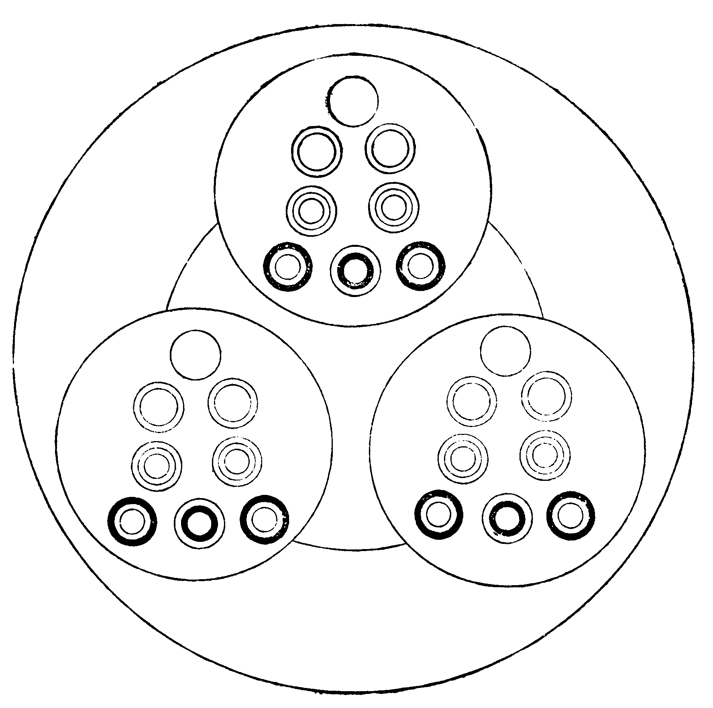

卍新纂大日本續藏經 第10冊
No.262 圓覺經句釋正白 (2卷)
【清 弘麗著】
第 2 卷
大方廣圓覺修多羅了義經句釋正白卷下之上
二在證性修清淨開二。一性證如空清淨開二。一序述菩薩興問開二。一序問躡次。
於是。
此序顯清淨慧菩薩從證因斷顯。恐斷未究竟清淨之諸來法眾迷究竟證之清淨執恡己證不捨迷悶覺心。有所興問希佛教益證中差別令末世眾生不迷證之差別知所究竟清淨成就徹因果證圓滿覺心。
清淨慧菩薩在大眾中即從座起。頂禮佛足右繞三匝。長跪叉手而白佛言。
句釋例前。
二述請教益開二。一慶聞現益。
大悲世尊為我等輩廣說如是不思議事。本所不見本所不聞。我等今者蒙佛善誘身心泰然得大饒益。
當文三句慶聞現益。大悲世尊云云一句。本所云云一句。我等今者云云一句。廣說者。備指前聞。如是不思議事者。覺心性相。微妙深奧不屬分別思惟塵影緣氣。此句述佛顯真。本所不見云云者。指向幻妄根塵識界所發見聞非本見聞淨性不了覺心實相。此句悲昔迷妄。我等今者。現前法眾同聞法時。蒙佛善誘者。誘引入也。引入圓滿覺心究竟清淨。身心泰然者。泰安逸也。離諸塵勞煩惱自在住持。得大饒益者。成就遊戲寂滅大海一切無礙。此句述眾承益。
二申請後益開二。一請教殊證。
願為諸來一切法眾重宣法王圓滿覺性。一切眾生及諸菩薩如來世尊所證所得云何差別。
當文二句請教殊證。願為云云一句。一切云云一句。諸來者。在會菩薩眾生也。云重宣者。以在斷在證。本無有二覺心。成就能斷之究竟即是所證之究竟。前聞教理已備彰顯最上了義究竟斷妄無有餘蘊。今為斷未究竟諸來法眾免彼執證迷斷之究竟清淨。因失證之究竟清淨。更請宣證差別令彼知所證是何證得。能知所斷是何斷以不兩迷於究竟清淨。故云重宣。法王準前釋。圓滿覺性者。無取捨得失之斷證因果。此句是前請重宣圓滿。以便知於證之差別。所證者能心。所得者所法。云何差別者。何為眾生之證得。何為菩薩之證得。何為如來世尊之證得。此句是正請重宣差別。以不迷於覺心圓滿。
二結益聞教。
令末世眾生聞此聖教隨順開悟漸次能入。
當文一句結益聞教。此聖教者。指請重宣之證得差別。隨順者。隨所證得之差別順修於圓覺菩提。開悟者。不迷於所未證得執恡乃所證得失本圓滿菩提。漸次者。次及也。由眾生之證得次菩薩之證得。由菩薩之證得次如來之證得。能入者。由如來之證得能入大圓覺海成就圓滿菩提。合文上科共成申請後益科竟。前合慶聞現益科攝屬述請教益科竟。連合序問威儀科管於序述儀音科竟。
二結終始。
作是語已。五體投地。如是三請終而復始。
句釋例前。前合序問儀音科共成序問周三科竟。連合序問躡次科入總序述菩薩與問科竟。
二序述世尊垂答開二。一長行列示開二。初序讚許開二。一讚請教益。
爾時世尊告清淨慧菩薩言善哉善哉。善男子。汝等乃能為末世眾生請問如來漸次差別。
二許答囑受開二。一囑令諦聽。
汝今諦聽。當為汝說。
句釋例前。
二受教默然。
時清淨慧菩薩奉教歡喜。及諸大眾默然而聽。
句釋例前。合文上科共成許答囑受科竟。前合讚請教益科攝屬初序讚許科竟。
次述正答開二。一示教殊證開二。一圓滿覺性開二。一法本平等開二。一一性徧滿。
善男子。圓覺自性。非性性有。循諸性起。無取。無證。
當文六句。一性徧滿。善男子一句。圓覺自性一句。非性性有一句。循諸性起一句。無取一句。無證一句。圓覺自性者。自有之性非依他性。此句標本。非性性有者。非菩薩眾生性之性有所圓覺自性。此句彰離。即乃性空真如不變義。循諸性起者。循隨也。隨諸眾生性菩薩性差別起現。此句顯即。即乃性有真如隨緣義。然唯隨緣故不變。唯不變故隨緣。若變則有窮盡。何能徧滿隨緣。在隨緣則於今現有。足徵無始不變。是故自覺之性。不屬他有。緣有於他全離全即。無取者。無能。此句人空。無證者。無所。此句法空。亦得合五句為一句。以非性性四句皆依圓覺自性顯故。亦得合五句為三句。圓覺句為本句。非性二句為因句。無取二句為果句。以果者因因而至也。有非性之全離因則有無取之人空果。有循諸之全即因則有無證之法空果。任分任合。皆無失於一性徧滿義。
於實相中。實無菩薩及諸眾生。
當文二句推本寂滅。於實相中一句。實無云云一句。實相中者。圓覺性中無方清淨無邊虗空之平等無二。此句示乃一相。實無者。語實則無寄簡幻有。菩薩眾生者。聖凡名相。以相因性有。既非菩薩性眾生性所有之圓覺性。此之性中何有彼諸眾生菩薩之相。是故實無。此句示乃寂滅。以唯寂滅。斯成一相。故此推本。
二發明寂滅開二。初徵釋。
何以故。菩薩眾生皆是幻化。幻化滅故無取證者。
當文三句徵釋。何以故一句。菩薩云云一句。幻化云云一句。何以故者。此句徵問。以現在有諸菩薩眾生名相。今云實無。故須徵明其所以無。皆是幻化者。菩薩眾生由無明顯出。無明本幻所由顯出者。即是由幻所化。故云皆是。此句釋明菩薩眾生名相非實所以實無。幻化滅故者。無明惑破。菩薩眾生名相不立之時。無取證者。幻相無性。無性之法。滅則全滅。無有不滅之者。以能取證。此句釋明非實之菩薩眾生。全歸寂滅所以實無。
次喻合。
譬如眼根不自見眼。性自平等無平等者。
當文二句喻合。譬如云云一句。性自云云一句。譬如眼根。喻實相。不自見眼。喻實相無二無取無證。以唯實相無二更無取證故實無於菩薩眾生而皆是所幻化。此句喻明全歸寂滅之菩薩眾生本一實相。性自平等者。一相實性。無平等者。無能證性。此句合明以一性故一相。乃實無於菩薩眾生之能證性。而全歸寂滅。合文上科共成發明寂滅科竟。前合推本寂滅科攝屬一相寂滅科竟。連合一性徧滿科管於法本平等科竟。
當文二句因迷成差。眾生云云一句。於滅云云一句。眾生迷倒者。迷方易處之本末無明非頓破所無明同於如來之二障永斷。總未能除於一切幻化。此句幻垢未清淨。於滅未滅者。事理二障伏斷深淺。妄功用中者。有於修證能所。便顯差別者。成立菩薩眾生。此句寂滅未現前。
二果順無二。
若得如來寂滅隨順。實無寂滅及寂滅者。
當文二句果順無二。若得云云一句。實無云云一句。若得者。擬望之辭。如來寂滅隨順者。法界海慧圓合一切無諸生死涅槃。此句斷妄究竟。實無寂滅者。無所證覺。及寂滅者。無能證覺。此句覺心圓滿。合文上科共成行求隨順科竟。前合法本平等科攝屬圓滿覺性科竟。乃答所請重宣之圓滿覺性者。
二差別順性開二。一住礙隨順開二。一解礙凡夫開二。一標行開二。一從迷開悟開二。一迷妄耽欲。
善男子一切眾生從無始來由妄想我及愛我者。曾不自知念念生滅。故起憎愛耽著五欲。
當文四句迷妄耽欲。善男子一句。一切云云一句。曾不云云一句。故起云云一句。妄想我者。發業無明。愛我者。續業無明。此句本具忘惑。曾不自知者。無因發覺。念念生滅者。幻心無常。葢悟心無常則不隨之輪轉。未知生滅是乃執有生貪。此句是無於慧照。故起憎愛者。迷心隨輪從違順境起計取惑。耽著五欲者。攀緣五塵欲境馳求忘返。此句現行緣染。
二悟覺知勞。
當文四句悟覺知勞。若遇善友一句。教令云云一句。發明起滅一句。即知云云一句。若遇者。擬幸之辭。善友者。入塵教化菩薩。此句發覺緣因。教令開悟者。菩薩教化令之開悟。圓覺淨性者。實相如空平等不動。無諸身心幻垢能所。此句示真。發明起滅者。輪迴境界無明識心。此句示妄。即知此生者。現前身心壽命。性自勞慮者。性身命種性。自由也。勞六根我執。慮六識攀緣。葢六根性同是菩提瞪發勞相。有此勞根乃生分別妄識為續業輪性不斷生死。受此果報身命。此句悟知生滅。合文上科共成從迷開悟科竟。
二息勞解淨。
若復有人勞慮永斷得法界淨。即彼淨解為自障礙。故於圓覺而不自在。
當文三句息勞解淨。若復云云一句。即彼云云一句。故於云云一句。若者。不定有。復者。轉至。以因善友教令開悟知於生性之勞慮即可直斷無明入淨覺性。今乃解淨礙覺。是又一種迷端。故云若復。勞慮永斷者。行想陰滅。得法界淨者。眾生濁淨。此句所發解因。即彼淨解者。即所得之法界淨生勝解心起證取知見。為自障礙者。不得直斷無明入自覺性究竟清淨。此句依解成障。屬無明理障之有所知愚。故者。解自障礙之故。於圓覺而不自在者。自在無礙義。失乃圓照無礙智光。此句違因般若。前合從迷開悟科共成標行科竟。
二結名。
此名凡夫隨順覺性。
當文一句結名。此者指所得之淨。所解之障。名凡夫者。以所淨解是行邊際未盡識陰全住無明非慧聖種故名凡夫。隨順覺性者。一切凡聖斷證差別起滅於覺。覺不起滅於一切。覺為主一切為客。任所生滅寂滅皆無能動搖於覺者。是故雖在凡夫乃至如來皆一於隨順。所分隨順之差別。則以人殊不在法殊。凡夫自為凡夫之隨順。乃至如來自為如來之隨順。如五色映珠光。珠光自一。映色自殊。然是色現光中。非光入色內之為隨順。前合標行科共成解礙凡夫科竟。
善男子。一切菩薩見解為礙。雖斷解礙猶住見覺。覺礙為礙而不自在。
當文四句標行。善男子一句。一切云云一句。雖斷云云一句。覺礙云云一句。見解為礙者。見諸淨解心屬妄想分別不成般若無礙智光。此句照性增明。雖斷解礙者。雖能離諸計取無解為礙。猶住見覺者。所見解礙之了覺心強於明照未歸圓寂。此句覺未極滿。覺礙者。覺之明照。為礙者。有覺明照不無立所。隱伏能心非佛境界。非同異性滅非一切同異所不能至。故覺之礙即為於礙。而不自在者。失乃寂滅無礙順行。此句殊果解脫。
二結名。
此名菩薩未入地者隨順覺性。
當文一句結名。此者指所斷之解所住之覺。名菩薩者。葢已斷法界淨之解礙。即是滅法界量。以佛覺用為己心者。故名菩薩。未入地者。世第一地修心迷覺中道無所名目。今尚住覺。故未入地。隨順覺性。釋例前。合文標行科共成覺礙菩薩科竟。
善男子。有照有覺俱名障礙。是故菩薩常覺不住照與照者同時寂滅。
當文三句總彰寂滅。善男子一句。有照云云一句。是故云云一句。有照者。覺明了知。有覺者。覺明明覺。總乃覺未明妙。立於明所。故顯現有照覺。俱名障礙者。有覺必明。有明立所。失本圓覺普照寂滅無二平等隨順。此句出所住覺之障礙。是故者。是此住覺障礙之故。常覺不住者。住覺即不覺成妄覺明。迴明向覺。不住明覺。則無不覺。是乃常覺。欲得常覺。其唯不住。如何不住。其唯常覺。指要言之。無於明覺。是為常覺。是為不住。葢翻前之住覺。而有於不住者也。照與照者。照即有照是所法。照者即有覺是能我。同時寂滅者。照滅則照者亦滅。照者滅則照亦滅。本無二能所。故滅妙同時。言寂滅者。覺極圓明。斯無能所。故非生滅之滅。乃寂滅之滅。此翻前之住覺。失覺圓明。而勝進於不住之常覺。以極覺之圓明。故照與照者。有同時之寂滅。功用在常覺不住。能所寂滅。特其効驗耳。此句顯不住覺之寂滅。
譬如有人自斷其首。首已斷故無能斷者。
當文二句喻顯。譬如云云一句。首已云云一句。自斷其首者。首喻覺之明照。以明照生所。是迷妄依。如人頭首。是身命依。斷首喻離於明照。自斷喻常覺不住。以覺住即明照立。覺不住即明照寂。此之明照。原本即覺。無別離法。但覺不住。斯能永離。是自離自斷也。故以自斷為喻。此句立喻。首已斷故者。由首已斷之故。無能斷者。無自斷首之人。此句顯喻。以人命寄於首。而命非首。雖命非首。然一斷其首。即無更生之人。彰顯覺本非明。明照是顯。無於明照。即無明覺。如人斷首。即無自斷之人。
則以礙心自滅諸礙。礙已斷滅無滅礙者。
當文二句合明。則以云云一句。礙已云云一句。礙心者。所明照覺。合喻有人之人。自滅諸礙者。覺除明照。合喻自斷其首。此句示覺伏元明以能寂滅。礙已斷滅者。澄元照性永離能所。合喻首已斷故。無滅礙者。無除照覺。合喻無能斷者。此句示覺照冥一全彰寂滅。合文上科共成心行處滅科竟。葢覺明照。是真常流注。滅此明覺。斯入徧圓平等常住不動清淨無流逸因。是為於心行處得乃寂滅二言語道斷開二。初喻顯。
修多羅教如標月指。若復見月了知所標畢竟非月。
當文二句喻顯。修多云云一句。若復見月云云一句。修多羅釋準前。教者。稱諸契經所有句理。開悟菩薩入自性覺。如標月指者。標月之指。月喻性覺。標指喻說教。此句舉喻。若復見月者。見於所指之月。當菩薩入自性覺之時。了知所標者。了識標月之指。當菩薩通達於說教之名句文身。畢竟非月者。月明指暗。所標之指。全非月質。當名句文身屬影響聲論因緣生法與自性覺之離依他無生起性真妄逈絕。此句顯喻。
次合明。
一切如來種種言說開示菩薩亦復如是。
當文一句合明。亦復如是者。言說開示令悟自覺。如指上之月。言說句理非即自覺。如指之畢竟非月。是故悟心菩薩捨離言說法身。合文上科共成言語道斷科竟。前合心行處滅科攝屬詳示寂滅科竟。連合總彰寂滅科管於標行科竟。
二結名。
此名菩薩已入地者隨順覺性。
二徧滿如來開二。一標行開二。一總彰徧滿。
善男子。一切障礙即究竟覺。
當文二句總彰徧滿。善男子一句。呼召與語。一切云云一句。圓明法性。無妄可斷。一切即覺。覺即一切。究竟不二。
二詳列徧滿開二。一一界徧滿開二。一自覺徧滿開二。一三德因果。
得念失念無非解脫。成法破法皆名涅槃。智慧愚癡通為般若。菩薩外道所成就法同是菩提。無明真如無異境界。諸戒定慧及婬怒癡俱是梵行。
當文六句三德因果。得念云云一句。成法云云一句。智慧云云一句。菩薩云云一句。無明云云一句。諸戒云云一句。得念者。緣念真如。失念者。緣念塵境。無非解脫者。念無自性。念恒生滅。念真如而不能住於真如。念塵境而不能及於塵境。故一因解脫。此句定因。成法者。圓滿淨覺。破法者。幻滅生死。皆名涅槃者。淨覺平等不動。生死虗妄。無生故同果涅槃。此句定果。智慧者。圓照清淨。愚癡者。分別能所。通為般若者。圓照分別。無二體性。總一覺明。是故同因般若。此句慧因。菩薩外道所成就法者。菩薩以出離智成就清淨。外道以計取見成就染污。同是菩提者。離智朗真空之慧。取見開幻有之光。故偕果菩提。此句慧果。無明者。眾生性。真如者。佛性。無異境界者。圓覺境界。此句身因。諸戒定慧者。出纏身業。及婬怒癡者。在纏身業。俱是梵行者。皆無作性。同體清淨。此句身果。
二一土因果。
眾生國土同一法性。地獄天宮皆為淨土。
當文二句一土因果。眾生云云一句。地獄云云一句。眾生者。情世間。國土者。器世間。同一法性者。總覺明所相待勞生。四大成立。無別體性。此句土因言土而及眾生者。依報自他共業。不彰眾生清淨不見一土清淨。地獄者十惡報趣。天宮者。十善報趣。皆為淨土者。夢境苦樂。幻人憂喜。總虗妄受。無實體性。故全清淨此句土果。合文上科共成自覺徧滿科竟。
二覺他徧滿。
有性無性齊成佛道。一切煩惱畢竟解脫。
當文二句覺他徧滿。有性云云一句。一切云云一句。有性者。一法界生。無性者。一法界土。齊成佛道者。無一眾生不入究竟覺。無一國土不本常寂光。此句圓他覺因。一切煩惱者。聖凡染淨知見善惡苦樂報趣。畢竟解脫者。同諸如來之身土因果。此句圓他覺果。前合自覺徧滿科共成一界徧滿科竟。
二多界徧滿。
法界海慧照了諸相猶如虗空。
當文一句多界徧滿。法界海者。大圓覺海。慧者大圓覺慧。圓覺海。法界數量。具見普眼章中。照了諸相者。以圓覺慧照了圓覺海之諸法界相。猶如虗空者。圓覺自相之清淨實相。前合一界徧滿科文共成詳列徧滿科竟。連合總彰徧滿科攝屬標行科竟。
二結名。
此名如來隨順覺性。
當文一句結名。例釋準前。前合標行科共成徧滿如來科竟。連合寂滅菩薩科攝屬斷礙隨順科竟。接合住礙隨順科管於差別順性科竟。乃答所請重宣之證得差別者。綸合圓滿覺性科入總示教殊證科竟。
善男子。但諸菩薩及末世眾生。居一切時不起妄念。於諸妄心亦不息滅。住妄想境不加了知。於無了知不辨真實。
當文六句如心無生。善男子一句。但諸云云一句。居一云云一句。於諸云云一句。住妄云云一句。於無云云一句。居一切時不起妄念者。常居圓明現量之中。不落明了意知之地。此句絕妄初始。於諸妄心亦不息滅者。妄心以念念生滅相續成輪。一念無生。斷所相續。即全息滅。本無所住。更何有當息滅者。故亦不息滅。若起息滅妄心之心。此之一心轉為妄依。心心息滅心心相續。無能息滅。唯知亦不息滅。是乃妙於息滅。正所謂無功之功。功不虗棄者。此句絕妄續終。了斯絕妄始終。直可諸妄永斷。成就始覺。住妄想境不加了知者。現量對境本無分別。如本無於分別。是曰不加。有此不加。即對境常寂。雖住妄想境。不異居淨土矣。此句證真原本。於無了知不辨真實者。對境之現量圓光無了知性。是無住本。同法界海量。無第二頭。如己眼根。不自見眼。若更求所真實而明辨之。即是迷頭狂走。無窮妄惑從此立本矣。故直示之不辨。能安忍於不辨。即徹本覺清淨究竟心源具無生忍力。此句徹真究竟。了斯原本究竟。自可一真常即圓明本覺同諸如來入剎那際三昧成等正覺無或異也。
二聞解不疑。
彼諸眾生聞是法門。信解受持不生驚畏。
當文二句聞解不疑。彼諸云云一句。信解云云一句。初句聞法頓證。次句信解頓證。信者不疑修習。解者明了修習。受者擔荷修習。持者久遠修習。不生驚者。無奇異心生。不生畏者。無艱難念起。是乃宿習大乘行人獲聞本法行相。合文上科共成標行科竟。
二結名。
是則名為隨順覺性。
當文一句結名。此頓證隨順。直同果行。非餘修證功用。不落差別位次。故但以隨順覺性名之。前合標行科共成直指頓證科竟。
善男子。汝等當知如是眾生已曾供養百千萬億恒河沙諸佛及大菩薩植眾德本。
當文二句彰因久植。善男子一句。汝等云云一句。如是眾生者。指信解受持隨順覺性之眾生。已曾供養佛菩薩云云者。大圓覺心。是百千萬億恒河沙之諸佛國土。諸大菩薩所共莊嚴。苟非已曾供養於此諸佛菩薩。何能聞斯頓證覺心法門而不生於驚畏。供養者。四威儀內心常清淨不生三毒不昧三寶入理事門以慧朗空以定持有徧滿圓覺平等莊嚴。植眾德本者。供養無量如來植無量果德。供養無量菩薩植無量因德。因果該徹。故曰眾德。
二顯果現證。
佛說是人名為成就一切種智。
當文一句顯果現證。佛說是人者。唯佛能知能。印成就一切種智者。如來果智。圓覺為法界海慧。是一切種智。今頓證隨順於覺性。故名成就。合文上科共成彰顯勸誘科竟。前合直指頓證科攝屬示益末世科竟。連合示教殊證科管於次述正答科竟。接合初序讚許科入總長行列示科竟。
爾時世尊欲重宣此義而說偈言。
句釋例前。
二挈旨差別順性。
覺與未覺時 漸次有差別 眾生為解礙
菩薩未離覺 入地永寂滅 不住一切相
大覺悉圓滿 名為徧隨順
二挈旨示益末世開二。一挈旨直指頓證。
末世諸眾生 心不生虗妄
二挈旨彰顯勸誘。
佛說如是人 現世即菩薩 供養恒沙佛
功德已圓滿 雖有多方便 皆名隨順智
重頌文竟。前合長行攝屬序述世尊垂答科竟。連合序述菩薩與問科入總性證如空清淨科竟。言性證如空者。根本如來隨順之照相如虗空。葢以當章教理。雖示隨順差別。乃發明差別。有於覺與未覺時。令見圓滿覺心之無取無證究竟清淨。以不迷於果性。未及顯修。故此專科。存合下四章。科屬修證。成足性修清淨之徹因教理。
二修證無礙清淨開二。一圓攝無礙開二。一示圓攝行開二。一序述菩薩與問開二。一序問躡次。
於是。
此序顯威德自在菩薩從無差本性多方便成修。不詳方便。轉礙修途。無以徹無修之性。有所與問希佛教益。令末世眾生不迷方便通達無礙成行圓攝。
二序問周三開二。一序述儀音開二。一序問威儀。
威德自在菩薩在大眾中即從座起。頂禮佛足右遶三匝。長跪叉手而白佛言。
句釋例前。
二述請教益開二。一慶聞現益。
大悲世尊。廣為我等分別如是隨順覺性。令諸菩薩覺心光明。承佛圓音不因修習而得善利。
當文四句慶聞現益。大悲世尊一句。廣為云云一句。令諸云云一句。承佛云云一句。初句讚佛。二句述聞。三句顯理。四句彰益。光明者。清淨開顯。圓音者。究竟開示。不因修習者。頓證隨順。
世尊。譬如大城外有四門隨方來者非止一路。
當文二句喻顯。世尊一句。譬如云云一句。大城喻大圓覺心。四門喻隨順四性。隨方來者喻四性順覺。非止一路者。門門多途。喻性性隨順。各非一法。此句舉喻。
次合明。
一切菩薩莊嚴佛國及成菩提非一方便。
當文一句合明。菩薩莊嚴佛國者。因行隨順。合喻四門之隨方來者。及成菩提者。果德隨順。合喻大城。非一方便者。種種修學法門。合喻非止一路。合上科文共成請教所行科竟。
當文三句資答。惟願世尊一句。廣為云云一句。并修云云一句。一切方便漸次者。該指修學法門。此句請說差別方便。修行人有幾種者。人以行成得修行之人。總有幾種。即知行之會歸。此句請說圓攝成就。
次結益。
當文二句結益。令此云云一句。速得云云一句。開悟遊戲者。了行圓攝無礙自在也。合上科文共成資答結益科竟。前合喻明方便科攝屬申請後益科竟。連合慶聞現益科管於述請教益科竟。接合序問威儀科該在序述儀音科竟。
二序結終始。
作是語已五體投地。如是三請終而復始。
句釋例前。前合序問儀音科共成序問周三科竟。連合序問躡次科入總序述菩薩與問科竟。
二序述世尊垂答開二。一長行列示開二。初序讚許開二。一讚請教益。
爾時世尊告威德自在菩薩言善哉善哉。善男子。汝等乃能為諸菩薩及末世眾生問於如來如是方便。
二許答囑受開二。一囑令諦聽。
汝今諦聽。當為汝說。
句釋例前。
二受教默然。
時威德自在菩薩奉教歡喜。及諸大眾默然而聽。
句釋例前。合文上科共成許答囑受科竟。前合讚請教益科攝屬初序讚許科竟。
次述正答開二。一示教所行開二。一善別法行開二。一推本差別開二。一本覺無二。
善男子。無上妙覺徧諸十方。出生如來與一切法同體平等。於諸修行實無有二。
當文四句本覺無二。善男子一句。無上云云一句。出生云云一句。於諸云云一句。無上句。示覺徧滿無二。出生如來者。果德本起。與一切法者。因行本起。同體平等者。因果覺行三無差別。此句示覺隨順無二。於諸修行者。徹因該果一切修習。實無有二者。實則無有二。葢以徧滿隨順唯一覺故。此句示修成實無二。
二循攝有三。
方便隨順其數無量。圓攝所歸循性差別當有三種。
當文二句循攝有三。方便云云一句。圓攝云云一句。方便無量句。示在攝行。圓攝者。圓攝無量方便。所歸者。攝別入圓之行。循性者。隨所歸攝行性。差別者。攝別立別。當有者。以攝無量順諸行性之所應有。三種者。三方便門。此句示所攝行。合文上科共成推本差別科竟。
善男子。若諸菩薩悟淨圓覺。以淨覺心取靜為行。
當文三句明淨覺行。善男子一句。若諸云云一句。以淨云云一句。悟淨圓覺者。悟圓明照。無取捨心。此句根悟圓覺。以淨覺心者。離於能所分別妄念。取靜為行者。取無能所分別之遠離動相為覺定行。此句彰能定行。
次發定相。
由澄諸念覺識煩動靜慧發生。身心客塵從此永滅。便能內發寂靜輕安。
當文三句為發定相。由澄云云一句。身心云云一句。便能云云一句。由澄諸念者。即上取靜。以取無能所分別之遠離動相為行自乃諸念澄寂。言由者。起下覺識煩動之由。覺識云云者。覺了於識之煩動微細生滅。得無隨之流轉。此非澄念。無能覺了。故云由。靜慧發生者。無分別慧。蓋識以分別煩動。今覺於識之煩動。不隨分別。故乃發生。此句示定由發。身心客塵者。地水火風。見聞覺知。屬明所妄能。相待搖立。幻化之法。非常住性。故云客塵。從此者。從於靜慧發生之地。永滅者。是識陰盡之超越命濁。此句示定成立。便能者。從滅得能無二體性。內發者。由覺開顯。非外取境。寂靜者。離於有為動搖。得自圓寂性定。輕安者。平等虗空究竟不動此句云定開顯。合文上科共成淨覺生定科竟。
二顯定結名開二。一顯定彰喻。
由寂靜故。十方世界諸如來心於中顯現。如鏡中像。
當文三句顯定彰喻。由寂靜故一句。十方云云一句。如鏡中像一句。初句推原覺定成就。十方世界者。依報全彰。諸如來心者。正報該舉。於中者。於寂靜中。顯現者。依正由顯。此句顯大圓覺定。圓裹法界一切依正。如鏡中像者。鏡喻覺定。像喻依正。此句喻顯。
二指定結名。
此方便者名奢摩他。
當文二句指定結名。此方便者句指定。名奢摩他句結名。奢摩他梵語。此翻止。即定之異名。合上科文共成指定結名科竟。前合淨覺生定科攝屬奢摩他定科竟。
善男子。若諸菩薩悟淨圓覺。以淨覺心知覺心性及與根塵皆因幻化。即起諸幻以除幻者。變化諸幻而開幻眾。
當文五句明淨覺行。善男子一句。若諸云云一句。以淨云云一句。即起云云一句。變化云云一句。若諸句根悟。釋準前。知覺心性者。知字從淨覺生。即前取靜取字同義。猶云知於了覺之心性。此覺心性指內心。根塵指外境。皆因幻化者。以淨覺心中本無是諸心境體性。故知今所有相。皆是幻化。此句知幻。即起諸幻者。起離幻之觀。以除幻者。離能幻之心。此句離能幻。變化諸幻者。開合根塵。顯現身土。而開幻眾者。滅度自他眾生。此句離所幻。
次發慧相。
由起幻故。便能內發大悲輕安。
當文二句為發慧相。由起幻故一句。便能云云一句。初句推本悲智從發之由。二句悲智開顯。大悲者。以圓覺淨性本無生佛。何實有悲生之智。故佛所悲生之智。本對幻眾生而幻發者。今乃以起幻離幻。智同諸佛。故爾便發。輕安者。幻悲起滅。全無起滅。究竟如空。平等不動。合文上科共成淨覺生慧科竟。
二顯慧結名開二。一顯慧彰喻。
一切菩薩從此起行漸次增進。彼觀幻者非同幻故非同幻觀皆是幻故。幻相永離。是諸菩薩所圓妙行如土長苗。
當文四句顯慧彰喻。一切云云一句。彼觀云云一句。幻相永離一句。是諸云云一句。從此起行者。起離幻行。漸次增進者。漸次得離諸幻。此句示離幻。彼觀幻者。能離幻智。非同幻故者。以智屬能離。非同所離之幻境。非同幻觀者。非同於幻之能觀智。皆是幻故者。有能觀智。即皆是幻。此句示所離。蓋明釋上句有漸次之增進。乃增進離於能觀智。幻相永離者。幻觀未離。幻相猶伏。觀智冥寂。幻相永離。此句示幻離。所圓妙行者。幻滅覺顯。如土長苗者。土喻離幻功用。苗喻開顯覺心。蓋覺以離幻成就。如苗以出土增長。此句喻顯。
二指慧結名。
此方便者。名三摩鉢提。
當文二句指慧結名。此方便者句指慧。名三摩鉢提句結名。三摩鉢提梵語。此翻等至。即慧之異名圓覺普照也。合文上科共成指慧結名科竟。前合淨覺生慧科攝屬三摩鉢提慧科竟。
善男子。若諸菩薩悟淨圓覺。以淨覺心不取幻化及諸靜相。了知身心皆為罣礙。無知覺明不依諸礙。
當文五句明淨覺行。善男子一句。若諸云云一句。以淨云云一句。了知云云一句。無知云云一句。若諸句根悟。釋準前。不取幻化者。遮照幻有。及諸靜相者。遮照空寂。此句淨覺圓明。了知者。了達之知。身心者。根識區宇。皆為罣礙者。有於根識。不彰寂滅。此句發圓明照。無知覺明者。無立所之知覺明性。不依諸礙者。永離分別能所心性。此句斷根本無明。
次中道相。
永得超過礙無礙境。受用世界及與身心相在塵域如器中鍠聲出於外。煩惱涅槃不相留礙。便能內發寂滅輕安。
當文四句為中道相。永得云云一句。受用云云一句。煩惱云云一句。便能云云一句。超過礙者。不住煩惱。超過無礙者。不住涅槃。此句中道成立。受用者。即是超過之義。以得超過。故得受用。相在塵域者。域疆界也。世界身心之相在於塵內。乃不出三界而出三界。正是所超過之礙無礙。如器中鍠者喻在塵域之世界身心相。器謂金銀銅鐵瓦等器凡擊而有音者如鐘磬之類。鍠是擊時器中所發鍠鍠之聲。聲出於外者。喻顯超出於世界身心所以得之受用。此句喻明中道。煩惱句合明不落二邊。故乃得於身心世界有其受用。蓋留煩惱即礙涅槃。此則輪轉生死。非可云於世界身心得乃受用。留涅槃即礙煩惱。此則證滅休寂。不來世界身心有其受用。唯今不留不礙。故得受用。便能句中道開顯。寂滅者。諸法平等。無增減相。輕安者。如法平等虗空不動。合文上科共成禪那中道科竟。
二顯中結名開二。一法說顯中。
當文二句法說顯中。妙覺云云一句。自他云云一句。妙覺者。果地覺性。此句示所內發之寂滅。乃如來之隨順寂滅境界以彰中道。自他句示於我人眾生壽者。四相究竟清淨。申明寂滅境界。我人見屬相分立故云不能及。眾生壽命見屬見分立。故云浮想。
二指中結名。
此方便者。名為禪那。
當文二句指中結名。此方便者句指於中道。名為禪那句結名。禪那梵語。此翻靜慮。即定即慧之中道義。合文上科共成顯中結名科竟。前合淨覺現中科攝屬禪那中道科竟。連合三摩鉢提奢摩他科管於顯行差別科竟。接合推本差別科該在差別法行科竟。答所請說之差別方便也。
善男子。此三法門皆是圓覺親近隨順。十方如來因此成佛。十方菩薩種種方便一切同異皆依如是三種事業。若得圓證即成圓覺。
當文五句圓攝修性。善男子一句。此三云云一句。如來云云一句。菩薩云云一句。若得云云一句。親近隨順者。是能成就圓覺方便。以三法門本從覺顯。是乃覺之自分法行。故云親近。此句示三法門全依覺起。如來句示三法門是果德因行。菩薩句示三法門成立菩薩萬行是因行方便。事業者。即三法門所有行法。圓證者。即一即三不一不三究竟淨覺徧滿隨順。即成圓覺者。入寂滅大海法身果證。此句極彰三法究竟。通文理趣乃答所請說之圓攝成就也。前合差別法行科攝屬示教所行科竟。
二示益勸修。
善男子。假使有人修於聖道教化成就百千萬億阿羅漢辟支佛果。不如有人聞此圓覺無礙法門一剎那頃隨順修習。
當文三句示益勸修。善男子一句。假使云云一句成多小果。不如云云一句暫修圓因。所以暫修圓因如此優勝者。以小果迷悶圓覺。此雖暫修親近圓覺。故此殊勝。前合示教所行科攝屬次述正答科竟。連合初序讚許科入總長行列示科竟。
爾時世尊欲重宣此義而說偈言。
句釋例前。
威德汝當知 無上大覺心 本際無二相
隨順諸方便 其數即無量 如來總開示
便有三種數
二挈旨顯行差別。
寂靜奢摩他 如鏡照諸像 如幻三摩提
如苗漸增長 禪那唯寂滅 如彼器中鍠
二挈旨圓攝修性。
三種妙法門 皆是覺隨順 十方諸如來
及諸大菩薩 因此得成道 三事圓證故
名究竟涅槃。
重頌文竟。前合長行攝屬序述世尊垂答科竟。連合序述菩薩興問科入總示圓攝行科竟。行言所行者。以當章在顯三法名相是所修行法。下章二十五輪修習則是能修頓漸具足圓攝無礙清淨修習。
於是。
此序顯辨音菩薩從三法門圓攝無量隨順方便如斯無礙在修此三法門。亦必圓攝無礙隨順修習頓漸融通。有所與問希佛教益令末世眾生不於無礙行而成執礙修也。
辨音菩薩在大眾中即從座起。頂禮佛足右遶三匝。長跪叉手而佛言。
句釋例前。
二述請教益開二。一慶聞前法。
大悲世尊。如是法門甚為希有。
當文二句慶聞前法。大悲世尊一句。如是云云一句。如是法門者。指圓攝三法。甚為希有者。三法乃圓覺親近隨順。故云希有。
世尊。此諸方便一切菩薩於圓覺門有幾修習。
當文二句請教能修。世尊一句。此諸云云一句。此諸方便者。三種法門該無量方便。故云諸。於圓覺門者。無礙融通是圓覺之門。顯今正請無礙修習。有幾修習者。成就圓攝必有互互融入修習法數。此句請教能修圓攝。
二資答結益。
願為大眾及末世眾生方便開示。令悟實相。
當文二句資答結益。願為云云句資答。令悟實相句結益。言悟實相者。以得修習圓攝即得三事圓證。成就圓覺住持平等清淨之一切實相。合文上科共成申請後益科竟。前合慶聞前法科攝屬述請教益科竟。連合序問威儀科管於序迷儀音科竟。
一序結終始。
作是語已。五體投地。如是三請終而復始。
句釋例前。前合序問儀音科攝屬序問周三科竟。連合序問躡次科入總序述菩薩與問科竟。
二序述世尊垂答開二。一長行列示開二。初序讚許開二。一讚請教益。
爾時世尊告辨音菩薩言善哉善哉。善男子。汝等乃能為諸大眾及末世眾生問於如來如是修習。
二許答囑受開二一囑令諦聽。
汝今諦聽。當為汝說。
句釋例前。
二受教默然。
時辨音菩薩奉教歡喜。及諸大眾默然而聽。
句釋例前。合文上科共成許答囑受科竟。前合讚請教益科攝屬初序讚許科竟。
善男子。一切如來圓覺清淨。本無修習及修習者。
當文三句果覺無修。善男子一句。一切云云一句本無云云一句。一切句彰顯果覺。本無句法我俱空。
二幻修成輪。
一切菩薩及末世眾生依於未覺幻力修習。爾時便有二十五種清淨定輪。
當文二句幻修成輪。一切云云一句。爾時云云一句。依於未覺者。未覺即不覺。乃始覺未究竟無明未永斷之地幻力修習者。修心能所總屬幻有。非無修證之自覺性。此句示修本幻。爾時者。在幻修習之時。便有者。依幻修習。還遠離幻。即乃覺顯。故成便有。清淨定輪者。三種法門本自覺性平等不動隨順淨行。今交互修習此三法門頓漸融攝成輪二十五。故云定輪。合文上科。共成總彰輪數科竟。
二列示輪數開二。一示相開二。一別躡漸輪開二。一別修成就開三。一修定成就開二。一標行。
若諸菩薩唯取極靜。由靜力故永斷煩惱。究竟成就。不起於座便入涅槃。
當文四句標行。若諸云云一句。由靜云云一句。究竟成就一句。不起云云一句。唯取極靜者。遠離生滅。此句行因是所修定。由靜力故者。由遠離於生滅。永斷煩惱者。無明惑淨。此句絕妄。究竟成就者。圓明性覺。此句證真。不起於座者。不起法空之座乃常住定相。便入涅槃者。迴身寂光。此句行果。是所成就。
二結名。
此菩薩名單修奢摩他。
當文二句結名。此菩薩者句指人。名單云云句指法。有人有法。是故前言依於未覺幻力修習也。單修即別修。合文上科共成修定成就科竟。
若諸菩薩唯觀如幻。以佛力故變化世界種種作用。備行菩薩清淨妙行。於陀羅尼不失寂念及諸靜慧。
當文四句標行。若諸云云一句。以佛云云一句。備行云云一句。於陀云云一句。唯觀如幻者。起悲照智觀諸一切幻化身土。此句行因。是所修慧。以佛力故者。即觀幻智。變化世界者。轉濁顯淨。種種作用者。無量莊嚴引誘有情。此句除染。備行云云者。滿足六度無量法門。此句妙淨。於陀羅尼者。圓覺總持。不失寂念者。無於明照生所乃中道行相。及諸靜慧者。靜慧即定行相。此句行果。是所成就。
二結名。
此菩薩者。名單修三摩鉢提。
句釋準前。合文上科共成修慧成就科竟。
當文三句標行。若諸云云一句。不取云云一句。煩惱云云一句。唯滅諸幻者。無於身心幻垢。此句行因。是所修中道。不取作用者。無於能所修證。獨斷煩惱者。頓破無明。此句絕妄。便證實相者。寂滅現前一切平等。此句行果。是所成就。
二結名。
此菩薩者。名單修禪那。
句釋例前。合文上科共成中道成就科竟。連合定慧二科攝屬別修成就科竟。言成就者。顯三法雖別亦圓無不融攝之義。
二攝修無礙開三。一定修無礙開三。一二法漸次開二。一先定次慧開二。一標行。
當文三句標行。若諸云云一句。以靜云云一句。便於云云一句。初句先定。二句即定攝慧。是於無生滅心益見於生滅之幻化不異於本無生滅。三句慧顯。
二結名。
此菩薩者。名先修奢摩他後修三摩鉢提。
句釋例前。合文上科共成先定次慧科竟。
若諸菩薩以靜慧故。證至靜性便斷煩惱。永出生死。
當文三句標行。若諸云云一句。證至云云一句。永出生死一句。初句先定。二句即定攝中。蓋證至靜。則安住不動。無真常之流注故能斷煩惱。三句中顯蓋永出於生死。非二乘涅槃是乃中道。
二結名。
此菩薩者。名先修奢摩他後修禪那。
句釋例前。合文上科共成先定次中科竟。前合先定次慧科攝屬二法漸次科竟。
若諸菩薩以寂靜慧。復現幻力種種變化度諸眾生。後斷煩惱而入寂滅。
當文三句標行。若諸云云一句先定。復現云云一句中慧。後斷云云一句後中。
二結名。
此菩薩者。名先修奢摩他中修三摩鉢提後修禪那。
句釋例前。合文上科共成定漸慧中科竟。
當文三句標行。若諸云云一句先定。斷煩惱已一句中中。後起云云一句後慧。
二結名。
此菩薩者。名先修奢摩他中修禪那後修三摩鉢提。
句釋例前。合文上科共成定漸中慧科竟。前合定漸慧中科攝屬三法漸次科竟。
若諸菩薩以至靜力。心斷煩惱復度眾生建立世界。
當文二句標行。若諸云云一句先定。心斷云云一句融即慧中是法齊修。
二結名。
此菩薩者。名先修奢摩他齊修三摩鉢提禪那。
句釋例前。合文上科共成定齊慧中科竟。
若諸菩薩以至靜力資發變化。後斷煩惱。
二結名。
此菩薩者。名齊修奢摩他三摩鉢提後修禪那。
句釋例前。合文上科共成定慧齊中科竟。
若諸菩薩以至靜力用資寂滅。後起作用變化世界。
二結名。
此菩薩者。名齊修奢摩他禪那後修三摩鉢提。
句釋例前。合文上科共成定中齊慧科竟。前合定慧齊中定齊慧中二科攝屬三法漸齊科竟。連合三法二法科管於定修無礙科竟。
若諸菩薩以變化力。種種隨順而取至靜。
當文二句標行。若諸云云一句先慧。種種云云一句次定。隨順取靜者。幻化之法無有作性。乃隨順性無作故定。
二結名。
此菩薩者。名先修三摩鉢提後修奢摩他。
句釋例前。合文上科共成先慧次定序竟。
若諸菩薩以變化力。種種境界而取寂滅。
當文二句標行。若諸云云一句先慧。種種云云一句次中。境界取寂滅者。幻化之境。本無生性。無生則非生滅。是乃寂滅故中。
二結名。
此菩薩者。名先修三摩鉢提後修禪那。
句釋例前。合文上科共成先慧次中科竟。前合先慧次定科攝屬二法漸次科竟。
若諸菩薩以變化力而作佛事。安住寂靜。而斷煩惱。
當文三句標行。若諸云云一句先慧。安住寂靜一句中定。而斷煩惱一句後中。
二結名。
此菩薩者。名先修三摩鉢提中修奢摩他後修禪那。
句釋例前。合文上科共成慧漸定中科竟。
若諸菩薩以變化力無礙作用。斷煩惱故安住至靜。
當文三句標行。若諸云云一句先慧。斷煩惱故一句中中。此句故字。承上無礙作用為斷煩惱之故。又起下安住至靜以斷煩惱之故。安住至靜一句後定。
二結名。
此菩薩者。名先修三摩鉢提中修禪那後修奢摩他。
句釋例前。合文上科共成慧漸中定科竟。前合慧漸中定科攝屬三法漸次科竟。
若諸菩薩以變化力方便作用。至靜寂滅二俱隨順。
二結名。
此菩薩者。名先修三摩鉢提齊修奢摩他禪那。
句釋例前。合文上科共成慧齊定中科竟。
若諸菩薩以變化力種種起用資於至靜。後斷煩惱。
二結名。
此菩薩者。名齊修三摩鉢提奢摩他後修禪那。
句釋例前。合文上科共成慧定齊中科竟。
若諸菩薩以變化力資於寂滅。後住清淨無作靜慮。
二結名。
此菩薩者。名齊修三摩鉢提禪那後修奢摩他。
句釋例前。合文上科共成慧中齊定科竟。前合慧定齊中慧齊定中二科攝屬三法漸齊科竟。連合三法二科管於慧修無礙科竟。
若諸菩薩以寂滅力而起至靜。住於清淨。
二結名。
此菩薩者。名先修禪那後修奢摩他。
句釋例前。合文上科共成先中次定科竟。
若諸菩薩以寂滅力而起作用。於一切境寂用隨順。
二結名。
此菩薩者。先修禪那後修三摩鉢提。
句釋例前。合文上科共成先中次慧科竟。前合先中次定科攝屬二法漸次科竟。
若諸菩薩以寂滅力種種自性。安於靜慮。而起變化。
當文三句標行。若諸云云一句先中。安于靜慮一句次定。而起變化一句後慧。
二結名。
此菩薩者。名先修禪那中修奢摩他後修三摩鉢提。
句釋例前。合文上科共成中漸定慧科竟。
當文三句標行。若諸云云一句先中。起於云云一句中慧。歸於靜慮一句後定。
二結名。
此菩薩者。名先修禪那中修三摩鉢提後修奢摩他。
句釋例前。合文上科共成中漸慧定科竟。前合中漸定慧科攝屬三法漸次科竟。
若諸菩薩以寂滅力種種清淨。而住靜慮起於變化。
二結名。
此菩薩者。名先修禪那齊修奢摩他三摩鉢提。
句釋例前。合文上科共成中齊定慧科竟。
若諸菩薩以寂滅力資於至靜。而起變化。
二結名。
此菩薩者。名齊修禪那奢摩他後修三摩鉢提。
句釋例前。合文上科共成中定齊慧科竟。
若諸菩薩以寂滅力資於變化。而起至靜清明境慧。
二結名。
此菩薩者。名齊修禪那三摩鉢提後修奢摩他。
句釋例前。合文上科共成中慧齊定科竟。前合中定齊慧中齊定慧科攝屬三法漸齊科竟。連合二法三法科管於中修無礙科竟。接合定修慧修無礙科該在攝修無礙科竟。綸合別修成就科統歸別攝漸輪科竟。
二圓合頓輪開二。一標行。
若諸菩薩以圓覺慧圓合一切。於諸性相無離覺性。
當文二句標行。若諸云云一句。於諸云云一句。以圓覺慧者。法界海慧。圓合一切者。普照法界。此句常寂而照。於諸性相之無離覺性者。常證實相。不明照生所。此句常照而寂。
二結名。
此菩薩者。名為圓修三種自性清淨隨順。
當文二句結名。此菩薩者一句顯人殊勝。名為云云一句顯法殊勝。三種自性者。全覺全觀。即一即三。無二體性。清淨隨順者。非依未覺之幻力修習。乃淨覺隨順。故云清淨。以彰圓修之本無修證也。合文上科共成圓合頓輪科竟。前合別攝漸輪科攝屬示相科竟。
二教修。
善男子。是名菩薩二十五輪。一切菩薩修行如是。
當文三句教修。善男子一句。是名云云一句。一切云云一句。是名者。指上所名。此句定名於法。修行如是者。乃的指之辭示不別有於修習。此句定修於人。前合示相科攝屬列示輪相科竟。連合總彰輪數科入總示教能修科竟。
二示益方便。
若諸菩薩及末世眾生依此輪者。當持梵行寂靜思惟。求哀懺悔經三七日。於二十五輪各安標記。至心求哀隨手結取。依結開示便知頓漸。一念疑悔即不成就。
當文七句示益方便。若諸云云一句。當持云云一句。求哀云云一句。於二云云一句。至心云云一句。依結云云一句。一念云云一句。依此輪者。依法修習。此句先標。當持梵行者。攝身清淨。寂靜思惟者。攝心清淨。寂靜是息妄。思惟是擇法。以無漏靜慧。簡諸真偽。去偽存真。此句除現行無明。求哀懺悔者。求佛大悲哀憫攝受。除昔愆尤惑業報障。懺悔乃華梵存略。梵語具云懺摩。義當容忍。謂容忍恕我罪。若別釋者。懺名陳露先罪。悔名改往修來。經三七日者。受身初始之三七日是名色前位。是前持業識造立果報期數。故今懺悔往罪還須三七日對期翻轉。此句除種子無明。於輪各安標記者。安二十五輪之先後漸次。此句顯法。至心求哀者。一心求佛哀授。隨手結取者。輪唯三單。餘俱具二具三。二十五輪。當二十五結。隨手於結而取之。此句泯絕心私。求佛示法。依結開示者。在結之單複齊圓先後漸次。便知頓漸者。別攝漸輪。圓合頓輪。此句明了修法決斷心疑。一念疑悔者。失所修因即不成就者。失乃果證。求哀至心即是有諸能入。迷悶淨覺故不成就。此句戒起分別。失所修持。以令成就順覺修習故。前合示教能修科攝屬次述正答科竟。連合初序讚許科入總長行列示科竟二重頌總挈開二。一序欲重宣。
爾時世尊欲重宣此義而說偈言。
句釋例前。
二挈旨列示輪數開二。一挈旨示相。
二挈旨教修。
十方諸如來 三世修行者 無不因此法
而得成菩提 唯除頓覺人 并法不隨順
唯除頓覺人之并法不隨順。是寄顯果覺之無修無證。又以反見因行之必依於此輪修習無有別異。
二挈旨示益方便。
一切諸菩薩 及末世眾生 常當持此輪
隨順勤修習 依佛大悲力 不久證涅槃
依佛大悲力者。即求哀懺悔求哀開示頓漸修習也。重頌文竟。前合長行共成序述世尊垂答科竟。連合序述菩薩與問科攝屬示圓攝修科竟。修言能修者。以當章二十五輪行相是能修方便。接合上章所修圓攝入總圓攝無礙科竟。
二十五輪圖

定輪之二十五。本以三法頓漸修習成立。先一法單修。次二法漸修。次三法漸修。又次一法齊二法修。二法齊一法修。如斯四加三法俱歷。成輪二十四已極漸行。後乃三法圓合圓修。成頓證輪。故共有於二十五。是三法本具之圓攝法相。不此彰顯。不知三法之漸次即不知三法之頓圓。并昧威德辨音二菩薩興問之躡次。一為請總垂教所修。一為請別垂教能修。共手琵琶。所不容紊之節奏者。因為圖顯。在圖一大圓相。大圓覺心也。內三圓相。圓合三法之頓證輪。每圓相中之八圓相。四層列位者。單複三齊之四加漸次也。八圓相有孤一重二重三中濃黑邊濃黑之差別者。孤一即一法單輪。重二即二法二輪。重三即三法二輪。濃黑者。二法融攝之相。中濃者。一法齊二法之融攝。邊濃者二法齊一法之融攝。本經句理聊為象顯云爾。
大方廣圓覺修多羅了義經句釋正白卷下之上
大方廣圓覺修多羅了義經句釋正白卷下之中
二圓離無礙開二。一示圓離心開二。一序述菩薩興問開二。一序問躡次。
於是。
此序顯淨諸業障菩薩從修輪頓漸無不成菩提一切眾生皆證圓覺。匪唯性具同可修成徹因該果實無不本來成佛之眾生。在諸修習迷悶圓覺不究竟證者。由未去所染污故。不入於清淨大圓覺海。有所興問希佛教益。令末世眾生斷所迷證者。成就夫皆證者。
淨諸業障菩薩在大眾中即從座起。頂禮佛足右遶三匝。長跪叉手而白佛言。
句釋例前。
二述請教益開二。一慶聞現益。
大悲世尊。為我者輩廣說如是不思議事一切如來因地行相。令諸大眾得未曾有。覩見調御歷恒沙劫勤苦境界一切功用猶如一念。我等菩薩深自慶慰。
當文五句慶聞現益。大悲世尊一句。為我云云一句。令諸云云一句。覩見云云一句。我等云云一句。初句讚佛。二句讚法。以前所聞教法總屬如來因地行相故此述讚。三句得益。四句覩見者觀見也。調御者。佛十號之一號。調伏眾生咸歸一乘。如調韁轡御車在道。歷恒沙劫者。歷恒河之沙數劫數調御眾生。勤苦境界者。如來調御眾生之難行能行難忍能忍境界。一切功用者。大悲幻智成就法行。猶如一念者。悲智幻現無作妙力種種變化總無動於心源故如一念。此句顯所得益入大圓覺心乃不隔於今古自他。故得觀見如來因行調御眾生多劫勤苦總悲智幻起無有異念。深自慶慰者。慶慰見如來之因行則能知所教化眾生不離性覺隨順有其無礙方便成就菩薩功用。此句慶得同因如來。葢以前諸菩薩興問教法。本為示益菩薩。自利利他。該果因行。故此慶益。
當文三句請教迷覺。世尊一句。若此云云一句。因何云云一句。若此者如此也。清淨者。無於生死涅槃功用修證也。此句本無生佛之覺心。為下問之發端。因何染污者。問何者是眾生之所染污。使諸眾生者。即所染污為之使。迷悶不入者。不得究竟清淨也。此句正問眾生迷覺。葢以本無生佛之覺心。且不得有於眾生。何更得有迷悶不入之眾生。此必有所染污者。使之迷悶知所染污之使迷悶不入者。則可得成就教化。設乃方便令去所染污。證入究竟淨覺。是該果因行之所不可不知者。故此繼問。
二資答結益。
當文三句資答教益。惟願世尊一句。廣為云云一句。令此云云一句。開悟法性者。示所染污之迷悶即得斷乃染污。入本淨覺是為開悟。此句資佛答教。作將來眼者。引導群盲。歸趨悟剎。此句結益。合文上科共成申請後益科竟。前合慶聞現益科攝屬述請教益科竟。連合序問威儀科管於序述儀音科竟。
二序結終始。
作是語已。五體投地。如是三請終而復始。
句釋例前。前合序述儀音科共成序問周三科竟。連合序問躡次科入總序述菩薩興問科竟。
二序述世尊垂答開二。一長行列示開二。初序讚許開二。一讚請教益。
爾時世尊。告淨諸業障菩薩言善哉善哉。善男子。汝等乃能為諸大眾及末世眾生咨問如來如是方便。
當文三句讚請教益。通例二句汝等云云一句如是方便者。指問迷覺為開悟之方便。
汝今諦聽。當為汝說。
句釋例前。
二受教默然。
時淨諸業障菩薩奉教歡喜。及諸大眾默然而聽。
句釋例前。合文上科共成許答囑受科竟。前合讚許教益科攝屬初序讚許科竟。
二次述正答開二。一示教迷覺開二。一總彰染污開二。一種子無明。
當文二句種子無明。善男子一句。一切云云一句。從無始者。無明業相無有體性本始。來者。無明轉現相。妄想者。無明智相執有者。無明相續執取相。我人眾生壽者。無明計名字相。計取名我。計捨名人。計取捨不及名眾生。計在不及者之有存立名壽者。凡此行相俱屬無明含藏種子。此句全彰。
二現行無明開二。一認妄立妄。
認四顛倒為實我體。由此便生憎愛二境。於虗妄體重執虗妄二妄相依生妄業道。
當文三句認妄立妄。認四云云一句。由此云云一句。於虗云云一句。四顛倒者。智相續執取計名之四妄心。此心迷妄失真。故云顛倒。為實我體者。為實己之心性。不悟本屬緣影。全體虗幻。此句立乃能心。由此便生者。境由心生。憎愛二境者。違順樂欲一切因緣。此句立乃所境。於虗妄體者四顛倒心。重執虗妄者。所憎愛境。妄境由妄心生。本屬虗妄。何有實境。今諸妄心。又執此所生之妄境為於實有。不斷憎愛。故云重執。二妄相依者。境生於心心生於境交妄發生。生妄業道者。道路也。由因之謂。由於迷心故憎愛之境不寂。迷境故憎愛之心不斷。發揮能所。成立善惡事業因緣。此句能所現行。為輪迴因。合文三句。總乃無明造業相。
有妄業故妄見流轉。厭流轉者妄見涅槃。
當文二句輪妄證妄。有妄云云一句。厭流云云一句。有妄業故者。推本緣因致果。妄見流轉者。六趣依正升沉不定。然果報依正。總乃色法。有於苦樂由生心受用。無受用心即無苦樂趣。故云妄見。此句成立凡染。厭流轉者。滅集苦諦。妄見涅槃者。證道滅諦。然流轉果報。本出妄見。非實有法。但當了本無生。何當起於厭憎。有此厭心。欲成趨避。故乃別立無流轉境以為涅槃。是云妄見。此句成立聖淨。有聖凡見總乃無明業苦相。合文上科共成現行無明科竟。前合種子無明科攝屬總彰染污科竟。答所請問之因何染污也。
由此不能入清淨覺。非覺違拒諸能入者。有諸能入非覺入故。是故動念及與息念皆歸迷悶。
當文三句指故迷悶。由此云云一句。非覺云云一句。是故云云一句。由此者。由於執相立見之種現無明。不能入清淨覺者。種現染污離自覺性。此句示本無明立所不入。非覺違拒云云者。覺無能所性自平等。遍滿隨順。於諸聖凡妄見。本無出離。有諸能入者。六凡之分別思惟二乘之沉空滯寂。非覺入故者。有無俱遣是圓覺境界。今執有計無。總屬幻垢。故非覺入。此句推本執所生能不入。是故者。是此有能有所即非覺入之故。動念者。六凡執有。息念者。二乘偏空。皆歸迷悶者。究竟迷覺圓離縛脫清淨自性。此句顯出迷悶。
何以故。由有無始本起無明為己主宰一切眾生生無慧目身心等性皆是無明。譬如有人不自斷命。
當文三句前示本妄。何以故一句。由有云云一句。譬如云云一句。何以故句徵問動息皆迷之故。起下發明令見由於無明未斷之與相續。無始釋準前。本起無明者。根本生相無明。為己主宰者。陀那細識含藏種子來先去後為於生死命根。生無慧目者。依無明主宰所生之眾生全體非覺。身心等性者。四大和合之身六塵緣影之心。皆是無明者。四大六塵依無明有。故身故心。總屬無明。此句示眾生身心一切俱妄。所有動息。不離身心。故成迷悶。不自斷命者。不自斷本無明。此句喻眾生執恡身心不能遠離。乃不自斷無明命根。
二後曉相續。
是故當知有愛我者我與隨順非隨順者便生憎怨。為憎愛心養無明故相續求道皆不成就。
當文二句後曉相續是故云云一句。為憎云云一句。是故者。以此不自斷命之故。當知者應知也。有愛我者。有愛於我之境。我與隨順者。樂欲從事。非隨順者。非我所愛之境。便生憎怨者。起嗔恨心不饒益想。此句令見憎愛之所由立。乃本有不自斷之命。為憎愛心者。為由也。養無明故者無明本計取性。今心心憎愛。乃心心計取。總屬無明一類體性。故成長養。相續者。無明相續種子起現行。現行熏種子。求道者。求淨覺心。皆不成就者。不入淨覺。葢由無明相續則乃無明成就。何由成於淨覺。此句令見憎愛本相續於無明故迷悶於淨覺。合文上科共成本妄續妄科竟。
二迷修迷證開二。一列相覺迷開二。一前列四相開二。一迷識二相開二。一我相開二。一徵釋。
善男子。云何我相。謂諸眾生心所證者。
當文二句徵釋。善男子一句。云何我相一句徵名。謂諸云云一句釋相。謂諸眾生者。該指聖凡。心所證者。證謂證取。即計取為我之無明心相。無論取妄取真。總是一類無明。真妄有二。取心無二。故此證取之我。該括聖凡佛全標指。
善男子。譬如有人百體調適忽忘我身。四肢弦緩攝養乖方微加鍼艾則知有我。是故證取方現我體。
當文四句喻明。善男子一句。譬如云云一句。四肢云云一句。是故云云一句。百骸調適者。四大守自性。融布無罣礙。地水火風不相陵奪之時。忽忘我身者。不自起於身見。此句喻本無身。四肢弦緩者。弦急緩慢。四肢失調之狀。攝養乖方者。方術也。調復無術必求醫治。微加鍼艾者。醫治所施痛楚從生。則知有我者。以有其鍼艾之痛楚。乃現受鍼艾之心。以受鍼艾之心。乃認在所鍼艾之身為是我。此句喻身從證有。句中知字即上心所證之心字。我字即上所證者之者字。是故云云者。是此鍼艾則知有身之故。謂諸眾生我相自證取心現。若無證取心則無我相。如不加鍼艾時。則不知有我身。故云方現。此句合明前釋。
次包結。
當文四句包結。善男子一句。其心云云一句。畢竟云云一句。皆是我相一句。其心乃至者。包舉從凡至聖無量差別一切證心。證於如來者。以果德為邊際。方能包舉未入果證一切諸心。此句所證法。畢竟了知云云者。終底有其了知於清淨涅槃之心。此句能證心。皆是云云者。明結上文乃至之辭包舉無盡。此句歸結。合文上科共成喻結科竟。前合徵釋科攝屬我相科竟。
二人相開二。一徵釋。
善男子。云何人相。謂諸眾生心悟證者。
二喻結開二。初喻明。
善男子。悟有我者不復認我所悟非我。悟亦如是。悟已超過一切證者悉為人相。
當文四句喻明。善男子一句。悟有云云一句。悟亦如是一句。悟已云云一句。悟我之不復認我者。乃捨執心。所悟非我者。乃無執心。此句就眾生常情設喻。葢凡悟有我之人則不復起認我之心。唯心心欲同乎人。渾全抱一人相。悟亦如是者。此句合喻。葢悟於證心之為我相。則不復立取證心。直心心趨捨。渾全抱一捨心之人相。與彼眾生之悟我者無異。悟已超過者。於悟心中超過之也。即乃捨所取證之心。一切證者。包舉之辭。從淺至深。凡取證心無不棄捨。悉為人相者。有超過一切證之心。皆是捨心。故皆是人相。此句承亦復如是句。合明心悟證者之為相人。
次包結。
善男子。其心乃至圓悟涅槃俱是我者。心存少悟備殫證理。皆名人相。
當文四句包結。善男子一句。其心云云一句。心存云云一句。皆名人相一句。其心者。悟心也。乃至圓悟云云者。包舉推極究竟明悟證於如來之畢竟了知清淨涅槃心。是取證我心此句是悟於證心。心存少悟者。存於悟心。備殫證理者。備悉也。殫盡也。悉盡捨所取證之理。此句是立捨心。皆名人相者。此句歸結。以有能捨之心。所捨之境。但離我執。未冥他觀。是名人相。合文上科共成喻結科竟。前合徵釋科攝屬人相科竟。連合我相科管於迷識二相科竟。言迷識者。證取心是無明之執取計名字。語證心是無明之智相續。乃無明識境。故云迷識。
二迷智二相開二。一眾生相開二。一徵釋。
善男子。云何眾生相。謂諸眾生心自證悟所不及者。
句釋例前。心自證悟者。心之自證自悟諸法。此出前所立之我人心相。所不及者。離於證悟。無可得取。無可得捨。乃三細之業轉現相。未生六麤。屬根本無明大總相分。故云眾生。
二喻結開二。初喻明。
善男子。譬如有人作如是言我是眾生。則知彼人說眾生者非我非彼。云何非我我是眾生則非是我。云何非彼我是眾生非彼我故。
當文五句喻明。善男子一句。譬如云云一句。則知云云一句。云何云云一句。云何云云一句。譬如句正喻了達無其人我之眾生相。則知句發明眾生相即是了達於無人我之心。云何二句詳釋了達無我無人之所以是於眾生相。我是眾生則非是我者。言既見我是於眾生則即無於我顯從是眾生邊成立非我之眾生相。我是眾生非彼我故者。言既見是我是眾生則即非人是眾生故非彼之我。顯從我是邊成立非彼之眾生相。
次包結。
善男子。但諸眾生了證了悟皆為我人。而我人相所不及者存有所了名眾生相。
當文三句包結。善男子一句。但諸云云一句。而我云云一句。了證者。了所證取心。了悟者。了所悟證心。皆為我人者。了去此證悟二心。以此二心之皆為我人相。在證悟文中有乃至之辭屬包舉一切。今以皆字承顯。此句示越前二相之所了心。而我人相所不及者。者字即了於證悟之心。此之了心是明所邊立。非同取捨心屬妄能邊生。故所不及。存有所了者。明照未寂。所相森然。名眾生相者。所立則能生。成有為法。此句定相歸結。合文上科共成喻結科竟。前合徵釋科攝屬眾生相科竟。
善男子。云何壽命相。謂諸眾生心照清淨覺所了者一切業智所不自見。猶如命根。
當文四句徵釋。善男子一句。云何壽命相一句徵相。謂諸云云一句釋相。猶如命根一句喻明。心照清淨者。了於證悟之為我人。得我人相所不及之清淨。此時存所了心。為照清淨之心。覺所了者。覺照於清淨之心為所了心。者字即覺字。乃覺所了之覺。此覺字是於覺明有明明覺之覺。是八識精性。一切業智者。業是無明初分是眾生相。智是無明中分是人我相。所不自見者。識精是覺明了知。業智因之迷立。如眼光因眼有。不能迴光見眼。此句指明八識精性為眾生生死輪迴深隱根本。猶如命根者。以眾生一期壽命。實有為之修短者。而人於修短中多不能自見。如一切業智所不自見之覺明。理事無異。
二喻結開二。初喻明。
善男子。若心照見一切覺者皆為塵垢。覺所覺者不離塵故。如湯消氷無別有氷知氷消者。
當文四句喻明。善男子一句。若心云云一句。覺所云云一句。如湯云云一句。若者設語辭。照見一切者。照於前之證悟了三心。覺者。即心所立之照覺。以於心有照見一切之覺。此覺非本有。立照則生。不立照則無。故云若。以見出乃分外。皆為塵垢者。皆字是合覺於照見之一切。同一體性。同為塵垢。此句發明明了覺心。所以稱為命根。指屬輪迴根本者。以是塵垢故。覺所覺者。上覺字照見心。所覺者。照見之一切不離塵故者。覺無能所。能所皆塵。今有於覺所覺之能所。故未離塵。此句乃釋明覺者之皆為塵垢。如湯消氷者。喻圓照覺相永斷無明。無別有氷知氷消者。喻覺心成就寂滅無二。無於能證所證。此句喻顯覺心成就究竟清淨。反顯有覺之未清淨。為未離塵。
次包結。
存我。覺我。亦復如是。
當文三句包結。存我一句。覺我一句。亦復如是一句。存我者。無明人我。此我挾境計取方現。必有所存。斯有其我。覺我者。覺明法我。此我根心智照為體。但有所覺。即有其我。此兼舉二我者。影照上文覺所覺者。以所覺是我人眾生三相是照生之所是為存我。覺是壽者相。是明起之照。是覺為我。總湯所消之氷相。亦復如是者。如於湯之消氷。當無別有氷以知消者。若其別有氷。知於氷消。即是未消之氷。此正承喻順合。反見有覺之未離塵。合文上科共成喻結科竟。前合徵釋科攝屬壽命相科竟。連合眾生相科管於迷智二相科竟。言迷智者。了悟心。是根本無明。覺了心。是覺明立照。立照失明。無明失照乃迷覺而有於不覺。故云迷智。接合迷識二相科該在前列四相科竟。
二後責迷修。
善男子。末世眾生不了四相。雖經多劫勤苦修道但名有為。終不能成一切聖果。是故名為正法末世。
當文五句後責迷修。善男子一句。末世云云一句。雖經云云一句。終不云云一句。是故云云一句。不了四相者。未能如湯之消氷遠離證悟了覺四心。此句不斷無明。雖經多劫者。遠歷僧祇。勤苦修道者。失乃隨順。但名有為者。未忘能所。此句相續無明。終不能成云云者。未獲本不生滅因地覺心。無以成常住寂滅果地覺證。一切聖果者。圓覺為大陀羅尼門。一切清淨真如菩提涅槃諸佛果德從之流出。此句失覺成就。是故者。是此本妄續妄迷悶淨覺之故。正法末世者。諸佛法化。於時教理行證。修學具足。名為正法。時存教理人少行證。則名末世。今此圓淨覺心本一切眾生所皆證者屬乃正法。以勤苦違修。於皆證者。遠劫無證。為之末世。此句申明失成聖果。失自本證之果。前合前列四相科。共成列相覺迷科竟。
二指行乖證開二。一修染污行開二。一顯迷認我開二。一非法非行開二。一違涅槃法開二。一彰故迷認開二。一示迷。
何以故。認一切我為涅槃故。有證有悟名成就故。
當文三句示迷。何以故一句。認一云云一句。有證云云一句。何以故者。以何故為不了於四相。此句徵問。一切我者。證取心為我相之大總。又乃兼該人相。為涅槃故者。以了知之清淨。為涅槃之清淨。故字應起句徵問。示乃迷認。此句迷所。有證者。我相心。有悟者。人相心。名成就故者。以失為得。此句迷能。
二喻失。
譬如有人認賊為子其家財寶終不成就。
當文一句喻失。認賊喻迷我人之證悟心。為子喻名為涅槃成就。其家喻圓覺。財寶喻一切聖果。終不成就喻不入淨覺。合文上科共成彰故迷認科竟。
二推顯迷認。
何以故。有我愛者亦愛涅槃伏我愛根為涅槃相。有憎我者亦憎生死不知愛者真生死故別憎生死。名不解脫。
當文四句推顯迷認。何以故一句。有我云云一句。有憎云云一句。名不解脫一句。何以故者。以何故知所為涅槃成就者是認我人相。此句徵問。有我愛者。有我斯有愛。亦愛涅槃者。故乃愛於涅槃。伏我愛根者。愛於涅槃之心。根本我相。即潛生我相。故曰伏。為涅槃相者。指乃迷認。葢涅槃本自覺相。非有為性。今以我出妄認。故於涅槃亦有為相。此句本有愛心示知迷認。有憎我者。有憎心之我。亦憎生死者。故乃憎於生死。不知愛者。不知於愛涅槃之心。以有愛涅槃之心。乃因生憎生死之念。故此推原。真生死者。愛為輪迴根本。有愛即有生死。故者。推由迷此。故乃憎彼。別憎生死者。不務斷於根本愛心。乃願絕於虗幻果報。此句本有憎心示知迷認。名不解脫者。纏縛愛憎非覺隨順。此句結名有為。前合彰故迷認科共成違涅槃法科竟。
二背解脫行開二。一徵相。
云何當知法不解脫。
當文一句徵相。此以纏縛愛憎之非解脫。在當人自心。深隱難知。何以明辨。所宜徵問。
二標行。
善男子。彼末世眾生習菩提者以己微證為自清淨猶未能盡我相根本。若復有人讚歎彼法即生歡喜便欲濟度。若復誹謗彼所得者便生嗔恨。則知我相堅固執持潛伏藏識遊戲諸根曾不間斷。
當文五句標行。善男子一句。彼末云云一句。若復云云一句。若復云云一句。則知云云一句。習菩提者。求淨覺心。以己微證者。一念證心。若有若無。甚為微細。為自清淨者。於微證心不自知有認為清淨。猶未能盡者。未得無證。我相根本者。微證之心正是我根。此句示有證取我根未盡則有愛憎現行不除。若復者。或有不定之辭。讚歎彼法者。稱譽彼所證法。即生歡喜者。因讚生悅。便欲濟度者。樂以法教彼人。此句示有愛心現行。誹謗彼所得者。譏呵彼證。便生嗔恨者。怨憎前人毀己法化。此句示有憎心現行。則知者。於愛憎現行以知之也。我相堅固執持者。忘我不愛。忘我不憎。今之愛憎兩熾。皆乃堅固執持於我。斯現行所愛憎以防護之潛伏藏識者。含藏種子於無明八識。遊戲諸根者。發業潤生於見聞覺知。曾不間斷者。倐憎倐愛種子起現行。現行熏種子。無由斷妄。此句示乃纏縛不成解脫。合文上科共成背解脫行科竟。前合違涅槃法科攝屬非法非行科竟。
二明結乖證。
善男子。彼修道者不除我相。是故不能入清淨覺。
當文三句明結乖證。善男子一句。彼修云云一句。是故云云一句。是故者。是此我相不除愛憎現行長養無明之故。前合非法非行科共成顯迷認我科竟。
二例迷餘三開二。初例。
善男子。若知我空無毀我者。有我說法我未斷故。眾生壽命亦復如是。
當文四句初例。善男子一句。若知云云一句。有我云云一句。眾生云云一句。若者設比之辭。知我空者。悟身無體。悟心無相。無毀我者。毀我之人。葢以人從我立。既空於我。何見毀之人。此句示無我無人。以令知有人還歸有我。有我說法者。因法愛憎。於人之讚謗。是見有我說之法。故乃有其毀我之人。我未斷故者。以我未斷之故。故乃見有我說之法。此句申明有人由於有我。以例迷我即乃迷人。眾生壽命之亦復如是者。如人之從我斷從我伏。以例迷我人即乃迷眾生壽命。一相迷而四相全迷也。此句盡例。
次結。
善男子。末世眾生說病為法。是故名為可憐愍者。雖勤精進增益諸病。是故不能入清淨覺。
當文五句次結。善男子一句。末世云云一句。是故云云一句。雖勤云云一句。是故云云一句。說病為法者。四相全無明染污。認之為涅槃成就。此句執妄。是故者。是此說病為法之故。名為可憐愍者。無有開悟之因。此句輪妄。增益諸病者。長養無明。此句續妄。是故者。是此續妄之故。此句迷覺。合文上科共成例迷餘三科竟。前合顯迷我相科攝屬修染污行科竟。
當文三句無自利行。善男子一句。末世云云一句。以如云云一句。不了四相者。未斷無明。此句住妄。以如來解者。般若智照。及所行處者。解脫行業。為自修行者。求已悟入。終不成就者。究竟迷悶。此句失真。
二無利他行。
或有眾生未得謂得未證謂證。見勝進者心生嫉妬。
當文二句無利他行。或有云云一句。見勝云云一句。未得謂得者。迷因修習。未證謂證者。迷果成就此句立我能所。見勝進者。成就順覺無礙修習。心生嫉妬者。嗔彼化行人輕己法。此句於人怨憎。合文上科共成違拒自他科竟。
二明結乖證。
由彼眾生未斷我愛。是故不能入清淨覺。
當文二句明結乖證。由彼云云一句。是故云云一句。未斷我愛者。潤生無明故四相不了於他嫉妬。前合違拒自他科共成失隨順行科竟。連合修染污行科攝屬指行乖證科竟。接合列相覺迷科管於迷修迷證科竟。綸合本妄續妄科該在發明迷悶科竟。貫合指故迷悶科統歸詳示不入科竟。答所請問之迷悶不入也。并合總彰染污科入總示教迷覺科竟。
二示益末世開二。一教修與記開二。一唯斷成修開二。一求悟增病。
當文三句求悟增病。善男子一句。末世云云一句。無令云云一句。希望成道者。希冀也。成道成就圓滿清淨覺心。此句顯欲。無令求悟者。本成佛覺無可證悟。有證悟心皆人我相。故令無求。唯益多聞者。凡立悟境。皆出名言戲論。故唯益於多聞。增長我見者。計名字相。本無明迷妄出生我見因緣令日滋益名言。長養無明計取。故成我見增長。此句顯病。
二斷妄圓寂。
但當精勤降伏煩惱。起大勇猛未得令得未斷令斷。貪嗔愛慢諂曲嫉妬對境不生。彼我恩愛一切寂滅。
當文四句斷妄圓寂。但當云云一句。起大云云一句。貪嗔云云一句。彼我云云一句。但當者。唯可如此也。語氣與上文無令相呼應。降伏煩惱者。伏斷根本無明。此句是初因修習般若。起大勇猛者。永斷根本無明。須如人奮斷己命相似。非有所激發一切不顧。捨身捨命如何可得故策之令起。未得令得者。未得慧目了明四相直須令得。未斷令斷者。未斷證心盡除四相直須令斷。此句是後行滿足菩提。貪嗔愛慢者。貪嗔是心。愛慢由境。諂曲嫉妬者。諂曲從愛流。嫉妬從慢滋。對境不生者。對可貪境而不生愛邊一切心。對可嗔境而不生慢邊一切心。此句是現行無明伏斷成就解脫。彼我恩愛者。自他境中可貪欲事。一切寂滅者。無自無他。何恩何愛。此句是現行無明永斷一路涅槃。合文上科共成唯斷成修科竟。
二顯佛印記。
佛說是人漸次成就。求善知識不墮邪見。
當文二句顯佛印記。佛說云云一句。求善云云一句。佛說是人者。佛語真實。如所如說。不誑不異。是人修習。得無迷惑。漸次成就者。無明本末。伏斷永斷。漸次功圓。此句記修習功畢。求善知識者。求大圓覺法界海慧如來導師。不墮邪見者。無於證取能所明照。此句記開悟圓覺。前合唯斷成修科共成教修與記科竟。
二誡迷失覺。
若於所求別生憎愛。則不能入清淨覺海。
當文二句誡迷失覺。若於云云一句。則不云云一句。若者。設悟防迷。所求者。清淨覺心。別生憎愛者。起證取心。憎生死而愛涅槃。此句乖因。則不能入者本成佛覺。無能證所證。起證取愛憎。即是有於能入之非覺。入清淨覺海者。無上法王圓滿覺心。此句違果。前合教修與記科共成示益末世科竟。連合示教迷覺科攝屬次述正答科竟。接合初序讚許科管於長行列示科竟。
爾時世尊欲重宣此義而說偈言。
句釋例前。
二挈旨詳示不入。
未除四種相 不得成菩提 愛憎生於心
諂曲存諸念 是故多迷悶 不能入覺城
二挈旨示益末世開二。一旨教修與記。
若能歸悟剎 先去貪嗔癡 法愛不存心
漸次可成就 我身本不有 憎愛何由生
此人求善友 終不墮邪見
二挈旨誡迷失覺。
所求別生心 究竟非成就
重頌文竟。前合長行攝屬序述世尊垂答科竟。連合序述菩薩興問科入總示圓離心科竟。言心者。以證悟了覺。根本於心。貪嗔愛慢。現行於心。言圓離者。以所示教益。總乃令斷此諸無明心相。成就究竟修證之平等清淨。
於是。
此序顯普覺菩薩從入清淨覺。必證悟了覺之心究竟圓離斯無迷悶。悲念修人所染污心。本求法生。不悟圓離法與求無相人則隨求生心執病為行舉心成見卒難免者。有所興問希佛教益。令末世眾生得能漸次成就。求善知識之不墮邪見。無於所求別生憎愛者。
普覺菩薩在大眾中即從座起。頂禮佛足右遶三匝。長跪叉手而白佛言。
句釋例前。
二述請教益開二。一慶聞現益。
當文四句慮聞現益。大悲世尊一句。快說禪病一句。令諸云云一句。心意云云一句。快說禪病者。證悟了覺之四心相。是修禪者所病。此句述聞。得未曾有者成就淨覺。此句開悟。心意蕩然者。永離生滅。獲大安隱者。常住寂滅。此句除迷。
世尊。末世眾生去佛漸遠賢聖隱伏。邪法增熾。
當文三句懷憂末世。世尊一句。末世云云一句。邪法增熾一句。末世者。世尊法化正像二千年後之末法萬年時世。去佛漸遠者。去正而像而末。漸漸遠於佛在世時無由知於果德。賢聖隱伏者。像法千年猶多應真大心輔化。時當末世眾生。無於機感。賢聖他方示現。此界隱跡。無從瞻彼因行。此句憂末世之無師。邪法增識者。世無慧燈。邪光斯熾。修習法門。非如來之三無漏學四決定誨。長養無明貪嗔愛慢不可勝說。此句憂末世之迷法。
使諸眾生求何等人。依何等法。行何等行。
當文三句依覺修習。使諸云云一句。依何等法一句。行何等行一句。初句使諸者。垂教指導之意包下五求。何等人者。何等之人是所當求。二句所求之人。何等之法是所當依。此二句發覺緣因。三句既以求人依法。復有何等之行是自所當行。此句入覺修習。
二斷妄成就。
除去何病。云何發心。令彼群盲不墮邪見。
當文三句斷妄成就。除去何病一句斷何染污。云何發心一句成就智用。令彼云云一句離諸妄見。此以生無慧目之眾生。凡有舉心塵勞先起。苟不知所離見。無以成就智用之清淨。合文上科共成請教正覺科竟。前合懷憂末世科攝屬申請後益科竟。接合慶聞現益科管於述請教益科竟。綸合序問威儀科該在序述儀音科竟。
二序結終始。
作是語已。五體投地。如是三請終而復始。
句釋例前。前合序述儀音科攝屬序問周三科竟。連合序問躡次科入總菩薩興問科竟。
二序述世尊垂答開二。一長行列示開二。初序讚許開二。一讚請教益。
爾時世尊告普覺菩薩言善哉善哉。善男子。汝等乃能諮問如來如是修行。能施末世一切眾生無畏道眼。令彼眾生得成聖道。
當文五句讚請教益。通例二句。汝等云云一句。能施云云一句。令彼云云一句。如是修行者。指在問之緣因修習發心離見。此句標問。無畏道眼者。於自於他。不迷邪見。此句智朗。得聖道者。入淨覺海圓滿菩提此句行圓。
二許答囑受開二。一囑令諦聽。
汝今諦聽。當為汝說。
句釋例前。
二受教默然。
時普覺菩薩奉教歡喜。及諸大眾默然而聽。
句釋例前。合文上科共成許答囑受科竟。前合讚請教益科攝屬初序讚許科竟。
次述正答開二。一依覺修習開二。一人法正觀開二。一求師頓證開二。一頓證覺智開二。一緣師淨覺開二。一前示當求。
善男子。末世眾生將發大心求善知識欲修行者。當求一切正知見人。
當文三句前示當求。善男子一句。末世云云一句。當求云云一句。將發大心者。將顯發己本成佛覺圓滿淨心。求善知識者。求圓覺友。欲修行者。圓成果地修證。此句修人種性。一切正知見者。圓覺普照正徧知人。此句略標師覺。
心不住相不著聲聞緣覺境界。
當文一句無住相心。心不住相者。無取覺心。聲聞緣覺境界者。由證取心現。既無住相心。何有聲聞緣覺境界。故乃不著。此八字即釋明心所不住之相。成足句理。令見師淨覺心。不但無於凡情。亦本無於聖解。
二無侵塵業。
當文三句無侵塵業。雖現云云一句。示有云云一句。不令云云一句。雖現塵勞者。現生濁世種種形類同事攝化。心恒清淨者。無縛脫知見。此句不執幻有。示有諸過者。示塵勞煩惱染污淨覺。讚歎梵行者。稱揚清淨解脫靜慧。此句開示實相。不令者。化導之也。不律儀者。見取戒取乃至治世之法。俱非奢摩他行。此句度生離塵住佛淨戒。合文上科共成後詳師覺科竟。前合前示當求科攝屬緣師淨覺科竟。
二成弟上慧。
求如是人。即得成就阿耨多羅三藐三菩提。
當文二句成弟上慧。求如是人一句。即得云云一句。求如是人者。如是無住相無侵塵之正知見人。此句緣因。阿耨云云者。梵語阿耨多羅此翻無上。三藐此翻正等。亦翻正徧。三菩提此翻正覺。合云無上正等正覺。亦云正徧知此句致果。正彌勒章所謂若遇如來無上菩提正修行路根無大小皆成佛果者。前合緣師淨覺科共成頓證覺智科竟。
二頓證覺行開二。一垂教植行開二。一於自清淨開二。一捐身求法。
末世眾生見如是人。應當供養不惜身命。
當文二句捐身求法。末世云云一句。應當云云一句。應當者。合宜也。寄簡不宜承事外道二乘之人。不惜身命者。尊重般若。知身幻化。無有真實。盡情捐捨。如涅槃童子之雪山捨身。大品常啼之香城破骨。
二降伏心見。
當文三句降伏心見。彼善云云一句。乃至云云一句。心無憍慢一句。四威儀中者。行住坐臥之語默動靜自修弘範。常現清淨者。嚴淨毗尼縛脫無礙。此句於師自行。示現種種過患者。指諸塵勞煩惱輪迴苦趣。此句於師覺他。心無憍者。無忽易心。無慢者。有敬謹心。此句於師所行所教之礙無礙境。降伏心見。不於師行之無礙而生憍。能於師示之過患而除慢。乃得以無憍心而不留於無礙。以無慢心而不留於礙。成就超過礙無礙境之自在隨順也。合文上科共成於自清淨科竟。
二於他清淨。
況復摶財妻子眷屬。
當文一句於他清淨。況復者。彰易也摶財者。摶聚也。眾生所摶聚養資身命之具。妻子眷屬者。眾生所市恩纏愛之人我。此皆身外之境。比於身心易為清淨。不以身命之難捨。心見之難降。故以況復顯易。前合於自清淨科共成垂教植行科竟。
若善男子於彼善友不起惡念。
當文一句敬田除惡。若善男子者。幸能之辭。善友者。無心相塵業之正知見人。不起惡念者。降伏其心。圓明清淨。無於憍慢。不善知見。
二悲田興利。
即能究竟成就正覺。心華發明照十方剎。
當文二句悲田興利。即能云云一句滿德。心華云云一句現行。心華發明者。圓覺慧光。照十方剎者。普照法界。合文上科共成彰益具行科竟。前合垂教植行科攝屬頓證覺行科竟。連合頓證覺智科管於求師頓證科竟。
善男子。彼善知識所證妙法應離四病。
當文二句證法離病。善男子一句。彼善云云一句。所證妙法者。圓滿淨覺。應離四病者。覺心非能故離作任。覺心非所故離止滅。此句總標。後乃詳曉。
二離病為法開二。一詳列病相開二。初徵。
云何四病。
當文一句初徵。
一者作病。若復有人作如是言我於本心作種種行欲求圓覺。彼圓覺性非作得故說名為病。
當文三句作求覺病。一者作病一句。若復云云一句。彼圓云云一句。初句標病名。若復者。或有之辭。作如是言者。彼人設教之語我於本心者。指六識分別。作種種行者。成立見聞覺知。欲求圓覺者。於見聞覺知成立圓覺修習。此句述在彼人示作求覺。彼圓覺性者。平等淨性。非作得故者。覺非作可得之故。以作乃能法。覺非能法。何作可得。說名為病者。不能得覺。是名為病。此句釋明作病。究所迷作求覺之故。乃迷五識中之同時明了識性為能作性。此明了識。即六識體性。故指於本心作在明了位中。未起攀緣分別見為清淨。故欲本以成就淨覺。不知此明了識精。全體虗幻。如何得覺。
二者任病。若復有人作如是言我等今者不斷生死不求涅槃。涅槃生死無起滅念。任彼一切隨諸法性欲求圓覺。彼圓覺性非任有故說名為病。
當文五句任求覺病。二者任病一切。若復云云一句。涅槃云云一句。任彼云云一句。彼圓云云一句。初句標病名。不斷生死者。謂生死本有無可斷故。不求涅槃者。謂涅槃本有不須求故。此句彼人設教不斷不求。無起滅念者。無於生死起之念故不須斷。無於涅槃滅之念故不用求。是乃無六識分別。此句彼人發明所能不斷不求。任彼一切者。任還也憑也。乃各憑他之謂。隨諸法性者。生死隨其生死。涅槃隨其涅槃。凡各有一法。即有一法之性。生滅常生滅。不生滅常不生滅。但能隨之便成圓覺。此句彼人示任求覺。以不斷不求。斯有所為任者。故先示不斷句。後示任彼句。凡此三句皆彼人設教之語非任有故云云者。非任生滅涅槃即能有於圓覺之故。以任但無能生之所。且未無能至乃生能之所。尚迷不識。如何有覺。此句釋明任病究所迷任求覺之故。乃以停六識之分別於末那七識所執外半分之六識以為諸法自有之生滅性。內半分之八識以為諸法自有之不生滅性。故欲圓合生死涅槃不斷不求任以入覺。不知此內外分之末那。全體虗幻。如何得覺。合文上科共成能法二病科竟。
二所法二病開二。一止求覺病。
三者止病。若復有人作如是言我今自心永息諸念。得一切性寂然平等欲求圓覺。彼圓覺性非止合故說名為病。
當文四句止求覺病。三者止病一句。若復云云一句。得一云云一句。彼圓云云一句。初句標病名。永息諸念者。除滅見聞覺知明了記性。此句彼人設教息滅妄心成就止相。得一切性者。根塵識性。寂然平等者。不外流逸內守幽間。欲求圓覺者。成就清淨。此句彼人發明止成之得求於圓覺。非止合故云云者。非止息妄心得合入圓覺之故。以止雖冥能心不立於異。猶未亡所在立於同。如何合一切同異所不能至之圓覺。此句釋明止病。究所迷止求覺之故。乃於外種之半分末那捨執歸位。為諸念永息。內種之半分末那八識無記。為諸性平等。故欲止以入覺。以不捨外半末那之明了。不彰內半末那之無記。不知此無記之八識。全體無明。如何得覺。
二滅求覺病。
四者滅病。若復有人作如是言我今永斷一切煩惱。身心畢竟空無所有。何況根塵虗妄境界。一切永寂欲求圓覺。彼圓覺性非寂相故說名為病。
當文六句滅求覺病。四者滅病一句。若復云云一句。身心云云一句。何況云云一句。一切云云一句。彼圓云云一句。初句標病名。永斷一切煩惱者。入元澄性。如波瀾滅於諸生滅根元。此句彼人示教捨我執心。身心云云者。出行陰區宇。同分生機。倐然隳裂。此句彼人示煩惱斷相得人空證。何況者。顯示之辭。根塵虗妄境界者。依根塵所發之意識界。蓋識發法根塵。根依身立。塵自心生。既身心之畢竟空。何根塵以發識。故以何況顯示。此句彼人示教獲人空證者之自離妄分別。合二句總彼詳示一切煩惱之永斷清淨成就滅相。一切永寂者。彼人承指身心識妄之畢竟空。欲求圓覺者。成就清淨。此句彼人發明滅成之得求於圓覺。非寂相故云云者。覺性之寂。普照圓寂。無別有相。有相之寂。乃晦昧無明。全立所相。故非淨覺。此句釋明滅病。究所迷滅求覺之故。乃於內種末那捨執歸位。無七我執之行陰盡。為一切煩惱之永斷。身心之畢竟空。無七之為六依根為識妄之永寂。全體在位無明迷為清淨覺。故見實有可滅法永成晦昧。斯成淨覺。不知無明妄性。非覺湛明性。如何得覺。合文上科共成所法三病科竟。前合能法二病科攝屬次釋科竟。連合初徵科管於詳列病相科竟。
二顯證清淨。
離四病者則知清淨。
當文一句顯證清淨。蓋得離於四病。必無明之永斷。方能不於六迷作止。於七迷任滅。而以在位之無明迷為證性。故知所證之清淨。則知者。指決末世眾生。於法四病。離不離間。以驗於師之證法。前合詳列病相科共成離病為法科竟。連合證法離病科攝屬示法清淨科竟。
二別觀邪正。
作是觀者名為正觀。若他觀者名為邪觀。
當文二句別觀邪正。作是云云一句。若他云云一句。作是觀者。於離四病以觀師法。名為正觀者。乃善求師之正知見。此句示正。若他觀者。不知觀法離病。任心橫生。愛憎去就。名為邪觀者。迷妄求師之惡知見。此句簡邪。前合示清淨科共成擇法圓離科竟。連合求師頓證科攝屬人法正觀科竟。
二自行入覺開二。一事師成行開二。一身心隨順開二。一畢生皈命。
當文二句畢生皈命。善男子一句。末世云云一句。欲修行者。欲成就順覺修習。應當盡命者。莫可親近邪師。唯宜盡形壽命皈依正覺。供養者。四事知時淨心虔供。善友即善知識。例釋準前。此句示依正覺。
二如空降心。
彼善知識欲來親近應斷憍慢。若復遠離應斷瞋恨。現順逆境猶如虗空。
當文三句如空降心。彼善云云一句。若復云云一句。現順云云一句。初句不以來相觀如來。故於知識之來親近應當斷憍慢心。憍慢。釋準前。二句不以去相觀如來。故於知識之復遠離應當斷瞋恨心無怨尤意而謂彼捨已。三句達法實相。故於善知識所現順己之境。逆己之境皆見如空究竟清淨不生異念。合文上科共成身心隨順科竟。
了知身心畢竟平等。與諸眾生同體無異。
當文二句自他平等。初句不於自立身心相。為畢竟平等。次句不於他立身心相。為自體無異。此從於師降心皈命。供養親近。開正知見。圓離四相之淨覺慧。前合身心隨順科共成事師成行科竟。
二簡別迷覺。
如是修行方入圓覺。
當文一句簡別迷覺。如是修行者。如上降心皈命正知見之師成淨覺慧以修行。方入圓覺者。方無染污迷悶。若其親近他師成立別行即迷覺入。前合事師成行科共成自行入覺科竟。連合人法正觀科攝屬依覺修習科竟。答所請問之求人依法修行也。
善男子。末世眾生不得成道。由有無始自他憎愛一切種子故未解脫。
當文三句推故迷覺。善男子一句。末世云云一句指迷。由有云云一句推故。無始自他憎愛者。本末無明。一切種子者。新熏舊熟。故未解脫者。由此之故。未成解脫。不彰解脫淨行。即未成道行。
若復有人觀彼怨家如己父母心無有二即除諸病。
當文一句人空現行。怨家者。起憎之境。父母者。起愛之境。人之憎心。猶愛轉成。以非所愛。故爾便憎。今對憎境之心。不二對愛境之心。此非但無於憎。亦無於愛。憎愛俱忘。現行清淨。無明斷熏。種子失潤。得能淨妄。是故諸病即除。諸病者。一切無明妄性也。
二法空現行。
於諸法中自他憎愛亦復如是。
當文一句法空現行。亦復如是者。合上人空現行。比見於法空現行。猶云若復有人觀處生死如入涅槃心無有二即除諸病。合文上科共成顯行除病科竟。前合推故迷覺科攝屬除病續妄科竟。
二發心離見開二。一教所發心。
善男子。末世眾生欲求圓覺應當發心。作如是言盡於虗空一切眾生我皆令入究竟圓覺。於圓覺中無取覺者除彼我人一切諸相。
當文四句教所發心。善男子一句。末世云云一句。作如云云一句。於圓云云一句。欲求圓覺者。求圓滿覺心。應當發心者。發度眾生之心。蓋圓覺海。世界無量。眾生無量。皆圓覺心建立。不發度此諸世界之眾生共住清淨。即無以究竟覺心之圓滿清淨。此句指令發心。作如是言者。下文所言。以彰言乃能顯教。所以發心。盡於虗空云云者。圓覺法界。我皆令入云云者。皆令成佛圓滿覺心。此句示所發之心。於圓覺中者。大圓覺中。無取覺者。無證悟了覺之四心入法空慧。除彼我人云云者。冥自他憎愛之妄境。成解脫行。此句示所度生入清淨覺之善行。以成就於所發心者。
二決能離見。
如是發心不墮邪見。
當文一句決能離見。如是者。如所教之發心。不墮邪見者。不成旁小取證。得能成就正覺。合文上科共成發心離見科竟。前合除病續妄科攝屬斷妄成就科竟。答所請問之除病發心離見也。連合依覺修習科入總長行列示科竟。
爾時世尊欲重宣此義而說偈言。
句釋例前。
普覺汝當知 末世諸眾生 欲求善知識
應當求正見 心遠二乘者 法中除四病
謂作止任滅
長行示病。一作二任三止四滅者。依識後先。今頌作止任滅者。依識生滅。以作求覺。乃執六識明了。是於六識計生。以止求覺。乃捨外半末那。是於六識計滅。為一類之生滅。以任求覺。乃執全體末那。是於七識計生。以滅求覺。乃捨內半末那。是於七識計滅。為一類之生滅。故此合頌。
二挈旨斷妄成就開二。一挈旨除病績妄。
不犯非律儀 戒根永清淨
無憎愛現行。永斷無明。住佛淨戒故此挈頌。
度一切眾生 究竟入圓覺 無彼我人相
當依正智慧 便得超邪見 證覺般涅槃
證覺般涅槃者。三德妙圓也。梵語般涅槃。此翻入滅度。覺即法身。滅即解脫。度即般若。重頌文竟。前合長行攝屬序述世尊埀答科竟。連合序述菩薩興問科入總示圓離法科竟。言法者。以人之邪正。由所證法以辨己之修行。由供養正法之人以成。乃得去病。乃能發心。入淨覺海。故獨指法彰科以攝全章教理。又不濫同上章旨趣。前合示圓離心科共成圓離無礙科竟。連合圓攝無礙科攝屬修證無礙科竟。接合性證如空科管於在證性修清淨科竟。蓋乃性明修成心離法妙之究竟清淨也。綸合在斷智行清淨科入總明因斷證清淨科竟。夫因既明。果可剋證。願賜如被末世眾生。德本久植者。共逢斯教。白如是。
大方廣圓覺修多羅了義經句釋正白卷下之中
大方廣圓覺修多羅了義經句釋正白卷下之下
於是。
此序顯圓覺菩薩從因行斷證淨覺方便。菩薩世尊。興問承答。廣說已盡。末世眾生直可依教修行成就圓覺。唯道場安居修觀首初方便未聞聖旨。恐末世眾生因之迷悶不獲饒益。於此法會。所彰了義法門。有所興問希佛教益。令末世眾生。知前修方便。得能成修究竟。該果徹因於自性覺海。
二序問周三開二。一序述儀音開二。一序問威儀。
圓覺菩薩在大眾中即從座起。頂禮佛足右遶三匝。長跪叉手而白佛言。
句釋例前。
二述請教益開二。一慶聞現益。
當文三句慶聞現益。大悲世尊一句。為我云云一句令末云云一句。種種方便者。該前答問十菩薩所示教理。此句讚教。大增益者。成就大乘修習方便。此句彰益。
二申請後益開二。一請初方便。
世尊。我等今者已得開悟。若佛滅後末世眾生未得悟者。云何安居修此圓覺清淨境界。此圓覺中三種淨觀以何為首。
當文五句請初方便。世尊一句。我等云云一句。若佛云云一句。云何云云一句。此圓云云一句。我等句彰在久習。若佛句悲念初修。云何句問安居方便。此圓句問修觀方便。此二方便之所須問者。以修圓覺。在離我人諸相。及不著緣覺聲聞境界。故須佛示安居之不繫徒眾。與請十方如來諸大菩薩之為伴侶。以圓覺三觀。本圓攝法。無有終始。恐末世眾生迷所從入。故須佛示三觀前修方便。以為軌則。
二資答結益。
惟願大悲為諸大眾及末世眾生施大饒益。
當文一句資答結益。合文上科共成申請後益科竟。前合慶聞現益科攝屬述請教益科竟。連合序問威儀科管於序述儀音科竟。
二序結終始。
作是語已。五體投地。如是三請終而復始。
句釋例前。前含序述儀音科攝屬序問周三科竟。連合序問躡次科入總序述菩薩興問科竟。
二序述世尊垂答開二。一長行列示開二。初序讚許開二。一讚請教益。
爾時世尊告圓覺菩薩言善哉善哉。善男子。汝等乃能問於如來如是方便。以大饒益施諸眾生。
二許答囑受開二。一囑令諦聽。
汝今諦聽。當為汝說。
句釋例前。
二受教默然。
時圓覺菩薩奉教歡喜。及諸大眾默然而聽。
句釋例前。合文上科共成許答囑受科竟。前合讚請教益科攝屬初序讚許科竟。
次述正答開二。一示教方便開二。一安居方便開二。一修自性覺開二。一例見常修。
善男子。一切眾生。若佛住世若佛滅後若法末時。有諸眾生具大乘性信佛祕密大圓覺心欲修行者。若在伽藍安處徒眾。有緣事故隨分思察。如我已說。
當文七句例見常修。善男子一句。一切眾生一句。若佛云云一句。有諸云云一句。若在云云一句。有緣云云一句。如我云云一句。若佛住世者。化緣未畢。若佛滅後者。雙林唱寂。若法末時者。二千歲後。此句一時齊修。有諸句簡性樂修。若在句靜無繫屬。伽藍梵語。此翻眾園。有緣句動不脫離。如我句例指前示。
二詳示限修開二。一標法開二。一立期安居開二。一修期念佛開二。一修期日數。
若復無有他事因緣即建道場當立期限。若立長期百二十日中期百日下期八十。安置淨居。
當文三句修期日數。若復云云一句。若立云云一句。安置淨居一句。他事因緣者。菩薩利他之事。即建道場者。無緣利他。即行自利。建於道場。為轉穢土成淨土之因。當立期限者。剋時精進。破除億劫顛倒之想。此句圓覺世界因果。長期百二十日云云者。乃初中後三番修證之期。初期多中期二十日。中期多後期二十日。以初期有前三七日懺悔。求示定輪頓漸修習。後乃正入道場懺悔求哀得遇善境。中期唯正懺悔之三七日。不更有求定輪之懺悔。故少二十日。後期則前經兩番懺悔已除事理遮障唯直攝念。不更有懺悔之三七日故又少二十日。大都三期正修俱八十日。當三八二十四之漸輪數。十日一輪者。一輪具十方法界。一日一方法界。故一輪具修十日。此句圓覺定輪期數。安置者。安住不離。淨居者。即所建之道場。此句示不離道場宴坐攝念。
二念佛正觀。
若佛現在當正思惟。若佛滅後施設形像心存目想生正憶念。還同如來當住之日懸諸旛華。
當文三句念佛正觀。若佛云云一句。若佛云云一句。還同云云一句。當正思惟者。不以三十二相見如來而於聲於色求之也。此句誡於佛在無起常想。施設形像者。彰佛儀容。心存者。心王迴向。目想者。心所迴向。以目即心。故不言見而言想。當正思惟者。不以寂滅相見如來而沉空滯寂求之也。此句誡於佛滅無生斷想。還同如來常住之日者。達像性等虗空同於生佛。懸諸旛華者。旛以却塵。華以發覺。表遮照二用成就莊嚴。此句冥除斷見如法供養。合文上科共成修期念佛科竟。
當文二句懺悔清淨。經三云云一句。遇善云云一句。經三七日。釋準前。稽首者。以頭至地遲留徐起。十方者。圓覺法界。諸佛名字者。稱名如覩攝念淨覺。求哀懺悔。釋準前。此句除染。遇善境界者。解脫徵應。得心輕安者。煩惱心伏。此句獲淨。
過三七日一向攝念。
當文三句攝念無生。過三七日者。在正修之八十日。一向攝念者。攝念攀緣遠離幻妄成淨覺心之前方便。此句示圓成性覺之清淨心。建三觀之無礙行。乃道場之正修習。合文上科共成懺悔攝念科竟。前合修期念佛科攝屬立期安居科竟。
當文二句示遠二乘。若經云云一句。當為云云一句。若經者。設遇也。夏首者。僧例安居在於初夏之月。三月者。九旬禁足之期。此句標指二乘安居時月。以菩薩行雖不同事必共制。故齊夏月。當為云云者。示知別行。心離聲聞者離聲聞所期之證心。入理無礙之法界。不假徒眾者。假借也。聲聞安居假他作法。故須徒眾。菩薩不爾。為修無上妙覺。入事無礙法界。故於佛前作法。以大圓覺為伽藍。是乃所為菩薩之清淨者。此句示無濫同二乘所作失菩薩事理無礙之止住。
至安居日。即於佛前作如是言我比丘比丘尼優婆塞優婆夷某甲。踞菩薩乘。修寂滅行。同入清淨實相住持。以大圓覺為我伽藍。身心安居平等性智。涅槃自性無繫屬故。
當文八句彰辭顯法。至安居日一句。即於云云一句。踞菩薩乘一句。修寂滅行一句。同入云云一句。以大云云一句。身心云云一句。涅槃云云一句。至安居日者。四月十六日。此句標時同禁。即於佛前者。直資果證。別異二乘從僧依止。作如是言者。在下之言。比丘者梵語。此含三義。一破惡。受戒三羯磨成發善律儀破惡律儀。二怖魔。以能破惡。魔羅驚怖出己界域化己眷屬空己宮殿。三乞士。乞財資身成自清德為世福田。乞法修心成自慧行為世導師。比丘尼者。尼女也。受具戒之女。優婆塞優婆夷者梵語。此翻近事男近事女。謂受三歸五戒之男女堪近比丘比丘尼為承事故。某甲者。各自稱名。行異二乘。故兼俗眾。此句因果圓即。踞菩薩乘者。入覺因行別異二乘迷覺果證。修寂滅行者。圓覺普照別異二乘不覺無明。此二句修習覺心。同入者。無於立所熾然之異。清淨實相者。根塵徧滿無壞雜性。住持者。圓照淨光總持不動。以大云云者。實相住持之所從建。此二句乃轉五八識為成所作智大圓鏡智。以該果海身心安居者。行想陰盡。生基清擾。性入元澄。如波瀾滅。化為澄水。平等性智者。七轉識名。涅槃自性者。無分別智。無繫屬故者。以無分別故絕攀緣。此二句乃轉六七識為平等性智妙觀察智。以徹因原。通合四句乃成就覺心。
二彰辭請友。
今我敬請不依聲聞。當與十方如來及大菩薩三月安居。為修菩薩無上妙覺大因緣故不繫徒眾。
當文三句。彰辭請友。不依聲聞者。不共二乘同因。此句簡小。當與者。決定與也。十方如來及大菩薩云云者。平等法會同居主伴因果自他一道感應。此句顯大。修菩薩云云者。圓滿果德。大因緣故者。修證妙覺。乃究竟淨覺因緣令盡虗空法界眾生同入大寂滅海。是莫大之因緣。不繫徒眾者。徒眾稱謂乃聲聞法眾。圓覺法會一切眾生皆本成佛平等住持。雖因果雙彰。還因果圓即。冥情聖凡。誰為徒眾。在今不繫者。即不依聲聞也。故以無上妙覺大因緣故發明之。此句釋明所以不依聲聞之故。合文上科共成經夏安居科竟。前合立期安居科攝屬標法科竟。
二結名。
善男子。此名菩薩示現安居。過三期日隨往無礙。
當文三句結名。善男子一句。此名云云一句。過三云云一句。此者。指上所標之法。示現安居者。菩薩因行無非度生。故云示現。此句彰菩薩祕果行因。過三期日者。初中後期修習已畢。隨往無礙者。徧滿隨順。此句彰修習成就無礙。前合釋相科共成詳示限修科竟。連合例見常修科攝屬修自性覺科竟。
二離名言境。
善男子。若彼末世修行眾生求菩薩道入三期者。非彼所聞一切境界終不可取。
當文三句離名言境。善男子一句。若彼云云一句非彼云云一句。若彼句標指大乘修人。非彼所聞者。圓覺境界言語道斷。有何所聞。一切境界者。戲論諸法。終不可取者免生妄惑。乃令曉於異因以絕非果。此句示斷無明煩惱。前合修自性覺科共成安居方便科竟。以答云何安居修覺之問。
二修觀方便開二。一示修開三。一修奢摩他開二。一修自性覺開二。初順覺行。
善男子。若諸眾生修奢摩他。先取至靜不起思念。靜極便覺。如是初靜從於一身至一世界。覺亦如是。
當文六句初順覺行。善男子一句。若諸云云一句。先取云云一句。靜極便覺一句。如是云云一句。覺亦如是一句。若諸句。標所修。先取至靜者。依不生滅心。不起思念者。依湛旋於虗妄分別。此句依覺生定。靜極者。永離分別。念寂無生。便覺者。得圓明覺。此句定成覺顯。如是初靜者。成定之初。從於一身者。無自身相。至一世界者。無世界相。此句示相定成。覺亦如是者。覺顯一身以至顯一世界。葢所謂靜者。乃照寂義。所謂覺者。即寂照義。故有云靜極光通達。寂照含虗空。此句合覺隨定顯。
善男子。若覺徧滿一世界者一世界中有一眾生起一念者皆悉能知。百千世界亦復如是。
當文三句次顯覺相。善男子一句。若覺云云一句。百千云云一句。若覺句示覺徧滿相。世界中眾生起念之能知者。即如鏡中像之顯現於諸世界如來心一義。百千句示定成就量。亦復如是者。如能知於一世界之一眾生起念也。合文上科共成修自性覺科竟。
二離名言境。
非彼所聞一切境界終不可取。
善男子。若諸眾生修三摩鉢提。先當憶想十方如來十方世界一切菩薩。依種種門漸次修行勤苦三昧。
當文四句依覺觀幻。善男子一句。若諸云云一句。先當云云一句。依種云云一句。若諸句標所修。先當憶想者。起觀幻之心。十方如來者。遍滿覺心。十方世界者。遍滿覺相。一切菩薩者。徧滿覺行。此句示從覺之體相用三法。非即非離以觀幻本。依種種門者。起諸幻法。漸次修行者。成就幻化。勤苦者。度生功用。三昧者。堪忍不動。此句示從體相用出生諸幻。以觀幻用。
二發願起幻。
廣發大願。自熏成種。
當文一句發願起幻。廣發大願者。菩薩度生之清淨大願。自熏成種者。由悲生智。現幻利生。合文上科共成修自性覺科竟。
二離名言境。
非彼所聞一切境界終不可取。
三修禪那開二。一修自性覺開二。一身心識觀。
善男子。若諸眾生修於禪那。先取數門心中了知生住滅念分劑頭數。如是周遍四威儀中分別念數無不了知。
當文四句身心識觀。善男子一句。若諸云云一句。先取云云一句。如是云云一句。若諸句標所修。先取數門者。取數息門了唯識境心王心所生起之數。心中了知者。淨覺照心元明了知。生住滅念者。八識見分之三細無明。業相屬生。轉現相屬住。六麤無明智相屬異。智言異者。異業轉現之明了故。相續相屬滅。相續言滅者。以有滅斯相續故。文中略異字者。攝滅字中。以先異後滅故。此生住異滅乃無明妄心。故云念。分劑者。生住滅念之邊際。頭數者。生住滅念之顯出。然必分劑不混。而後頭數彰顯。是則為於明了。此句是知心識數。如是周徧云云者。如是生住滅念之了知。周徧了知於身之四威儀所有分別念數。分別念數者。從身相出生之執取計名字。造業業苦俱妄心識。乃八識相分所有無明心數。無不了知者。分劑頭數之了了明知也。此句知身識數。
二世界識觀。
當文二句世界識觀。漸次增進一句。乃至云云一句。漸次增進者。從知身心漸知世界。從知一世界漸知多世界。此句示知心識數量。乃至得知云云者。三界唯心。萬法唯識。世界因何建立。諸法何家生滅。雖積百千世界滴雨頭數。無不是無明心念頭數。故得了知。猶如云云者。以近況遠。發明於所得知。非妄想測度之知。乃圓明現量之知。此句示知心識數相。合文上科共成修自性覺科竟。
非彼所聞一切境界終不可取。
句釋例前。前合修自性覺科共成修禪那科竟。連合修三摩鉢提奢摩他科攝屬示修科竟。
二結名。
是名三觀初首方便。
當文一句結名。三言觀者定成照寂。慧成觀幻中成覺識。皆順圓覺普照。淨性成行。初首者。修觀之初。方便者。從於取靜憶想取數成修三觀覺行。前合示修科共成修觀方便科竟。以答三觀以何為首之問。連合安居方便科入總示教方便科竟。
二示益修習開二。一圓修頓證。
若諸眾生徧修三種勤行精進。即名如來出現於世。
當文二句圓修頓證。若諸云云一句。即名云云一句。徧修者。圓修也。勤行者。心心圓照。精進者。念念圓寂。此句示圓修習。即名如來云云者。三觀圓修得同如來之寂滅。隨順清淨覺行。故即是於如來出現世間。非以三十二相為如來也。此句示成頓證。
二隨修漸證開二。先斷妄業。
若後末世鈍根眾生。心欲求道不得成就由昔業障。當勤懺悔常起希望。先斷憎愛嫉妬諂曲求勝上心。
當文四句先斷妄業。若後云云一句。心欲云云一句。當勤云云一句。先斷云云一句。初句標根。二句示障。三句示懺。常起希望者。希望障斷道成也。有此希望益勤懺悔。故令常起。四句斷業。求勝上心者。增上慢心。合憎愛等。乃六根本無明。
當文三句次隨修習。三種云云一句。此觀云云一句。心不云云一句。初句單修。二句複修。不得者。不得入覺成就也。三句輪修。漸次求證者漸次修觀求證淨覺也。合文上科共成示益修習科竟。前合示教方便科攝屬次述正答科竟。連合初序讚許科入總長行列示科竟。
爾時世尊欲重宣此義而說偈言。
句釋例前。
圓覺汝當知 一切諸眾生 欲求無上道
先當結三期 懺悔無始業 經於三七日
然後正思惟 非彼所聞境 畢竟不可取
二挈旨修觀方便。
二挈旨示益修習開二。一挈旨圓修頓證。
若能勤修習 是名佛出世
二挈旨隨修漸證。
重頌文竟。前合長行共成序述世尊垂答科竟。連合序述菩薩興問科攝屬該果淨觀方便科竟。接合徹因斷證清淨科入總正宗分竟。
三流通分開二。一別詳問答開二。一序述菩薩興問開二。一序問躡次。
於是。
此序顯賢善首菩薩從十一菩薩各各興問圓覺教理徹因該果義已終了。唯在奉持流通。饒益末世眾生。所當知者。經教名字修習功德。與夫護持經人流布教地。有所興問成就奉持流通。
賢善首菩薩在大眾中即從座起。頂禮佛足右繞三匝。長跪叉手而白佛言。
句釋例前。
二述請教益開二。一慶前聞法。
當文二句慶前聞法。大悲世尊一句。廣為云云一句。不思議事者。圓覺境界。非思惟測度之所能知。
二申請四事。
世尊。此大乘教名字何等云何奉持。眾生修習得何功德。云何使我護持經人。流布此教至於何地。
當文五句申請四事。世尊一句。此大云云一句名字奉持。眾生云云一句修習功德。云何云云一句護持經人。流布云云一句流布教地。合文上科共成述請教益科竟。前合序問威儀科攝屬序述儀音科竟。
二序結終始。
作是語已。五體投地。如是三請終而復始。
句釋例前。前合序述儀音科共成序問周三科竟。連合序問躡次科入總序述菩薩與問科竟。
爾時世尊告賢善首菩薩言善哉善哉。善男子。汝等乃能為諸菩薩及末世眾生問於如來如是經教功德名字。
當文三句讚所申請。通例二句。汝等云云一句。略讚前二該攝後二。
二許答囑受開二。一囑令諦聽。
汝今諦聽。當為汝說。
句釋例前。
二受教默然。
時賢善首菩薩奉教歡喜。及諸大眾默然而聽。
句釋例前。合文上科共成許答囑受科竟。連合讚所申請科攝屬初序讚許科竟。
善男子。是經百千萬億恒河沙諸佛所說。三世如來之所守護。十方菩薩之所歸依。十二部經清淨眼目。
當文五句先彰經體。善男子一句。是經云云一句。三世云云一句。十方云云一句。十二云云一句。諸佛所說者。圓覺乃諸佛海。諸佛接因。皆顯說圓覺。三世如來者。過現未三世。之所守護者。過去如來入圓覺涅槃。現在如來闡圓覺彰化。未來如來本圓覺起因。此二句。一句諸佛利他。一句諸佛自利。為諸佛寶。菩薩歸依者。順圓覺教化。此句為聖僧寶。十二部經者。一契經諸經之長行。二祇夜經諸經之重頌重頌長行直說者。亦云應頌應長行之文有所偈句。三授記經諸經中授諸菩薩緣覺聲聞等作佛記。四偈經諸經之孤起偈句非重頌長行者亦云諷頌。五句經諸經中無問自說者。六因緣經諸經中因問有說者。七本生經諸經中如來說自行因本曾為事。八本事經諸經中說如他前世昔所作事。九方廣經諸經中軌則修行包含道理正理為方富有名廣。十未曾有經諸經中說三寶等甚希有事及諸弟子讚歎如來希有功德。十一譬喻經諸經中設立譬喻開顯旨趣。十二論議經諸經中分別所說義設為問答明釋廣解者。此總標如來所有言說之十二門。清淨眼目者。如來一代時教。總為眾生開示圓覺。圓覺明悟如人有目。日光明照得見一切。乃萬行之本。此句為妙法寶。
後列經名。
是經名大方廣圓覺陀羅尼。亦名修多羅了義。亦名祕密王三昧。亦名如來決定境界。亦名如來藏自性差別。汝當奉持。
當文六句後列經名。名經五句。汝當奉持一句。初句總持。二句絕詮。餘釋準前。三句大定。祕密者。非思議境。王三昧者。為三昧之王諸定之首。四句不異。決定境界者。本成佛覺隨緣不變。五句不一。自性差別者。如法界性不變隨緣。汝當奉持者。知名識體。是所奉持。合文上科共成名字奉持科竟。
二流布教地開二。一果極佛海。
善男子。是經唯顯如來境界。唯佛如來能盡宣說。若諸菩薩及末世眾生依此修行漸次增進至於佛地。
當文四句果極佛海。善男子一句。是經云云一句。唯佛云云一句。若諸云云一句。是經句理本。唯佛句教主。若諸句行進。葢唯理本教主。唯佛如來。無他能所。故乃修行增進直至佛地。
二因周法界。
善男子。是經名為頓教大乘頓機眾生從此開悟。亦攝漸修一切群品。譬如大海不讓小流乃至蚊蝱及阿修羅飲其水者皆得充滿。
當文四句因周法界。善男子一句。是經云云一句。亦攝云云一句。譬如云云一句。是經句顯正。亦攝句示兼。所以兼者。修習大乘未入究竟覺心不無差別果證。譬如句喻明兼義。不讓小流者。不讓其潤濟之利。蚊蝱修羅飲水之得克滿。正見海之不讓偏小溪流。蚊蝱腹小喻小根眾生。修羅腹大喻大根眾生。葢蚊蝱飲小流水而取足充滿。飲海流水更無不得取足充滿。修羅飲海流水而取足充滿。飲小流水或有不得取足充滿。故並以為喻。令見大海。能不讓於小流。小流不能不讓於大海。猶頓教能攝漸修。漸修之不能攝於頓教也。合文上科共成流布教地科竟。
善男子。假使有人純以七寶積滿三千大千世界以用布施。不如有人聞此經名及一句義。
當文三句因度勝劣。善男子一句。假使云云一句。不如云云一句。假使者。設比之辭。純以者。不雜他物。七寶者。一金二銀三琉璃四頗瓈五硨磲六碼碯七珍珠。積滿者。豎高橫徧。三千大千世界者。千日月千須彌山之世界為一小千世界。如是小千為一世界又千世界為一中千世界。如是中千為一世界又千世界乃一大千世界。是則有千小世界千小千世界千中千世界之三千世界為一大千世界。共有萬億日月須彌四洲。總名為一娑婆界也。以用布施者。行檀波羅蜜也。然雖積界寶施。皆身外之物。不能滿足檀度。此句施劣。聞此經名者。因名而得體。及一句義者。解義而悟心。皆能成就般若。滿足菩提。此句慧勝。
二果證勝劣。
假使有人教百恒河沙眾生得阿羅漢果。不如有人宣說此經分別半偈。
當文二句果證勝劣。假使云云一句。不如云云一句。二乘果證無明。圓覺教彰淨性。故如彼之多教證。不如此之略宣說。以此宣說乃佛果自性。故爾殊勝半偈者。隨舉一偈分別其半。所有理趣。合文上科共成彰劣顯勝科竟。
二極勝顯勝。
善男子。若復有人聞此經名信心不惑。當知是人非於一佛二佛種諸福慧。如是乃至盡恒河沙一切佛所種諸善根聞此經教。
當文三句極勝顯勝。善男子一句。若復云云一句。當知云云一句。信心不惑者。聞經名圓覺。即信是己本心一切清淨更無疑念隨順修習。此句顯聞。一佛二佛者。報化身佛。種諸福慧者。如來福慧二輪具足供養親近如來之人無不種所福慧。恒沙佛所種諸善根者。入圓覺性海親近供養滿足圓覺如來。此句顯勝。葢能親近供養一佛如來。已非他福可較。今乃直劣一二佛之種福慧。而云恒沙佛所之種善根。其勝功德。非可容於思議者。前合彰劣顯勝科共成修習功德科竟。
汝善男子。當護末世是修行者。無令惡魔及諸外道惱其身心令生退屈。
當文三句囑示護持。汝善男子一句。當護云云一句。無令云云一句。汝善男子者。非止呼召當機。乃直囑於在會諸眾。此句付眾。是修行者。修行圓覺之人。此句囑護。惡魔者。愛樂生死。外道者。計著邪見。惱其身心者。魔以神力令於身不安於心暗昧。外道以計取令於身執著於心續妄。令生退屈者。退不精進。屈失佛道。此句示護。
爾時會中有火首金剛摧碎金剛尼藍婆金剛等。八萬金剛并其眷屬。即從座起頂禮佛足右遶三匝而白佛言。
當文三句稟命威儀。爾時云云一句。八萬云云一句。即從云云一句。爾時會中者。圓覺法會如法界性。故道場眾世界眾總入會中。火首者。以頭有火燄。又云此力士。觀火性得道。故以為名。乃化多婬心成智慧火。由昔發願於諸佛成道親為力士降伏魔怨者。金剛即彼所執寶杵之名以稱其神。尼藍婆梵語。義翻強猛。又翻離結縛。以勇進故能離諸結縛。此句序上首神名。八萬句序眾多上首眷屬。即從句序禮敬威儀。例釋準前。
二陳辭護持。
世尊。若後末世一切眾生有能持此決定大乘。我當守護如護眼目。乃至道場所修行處我等金剛自領徒眾晨夕守護令不退轉。其家乃至永無灾障疫病消滅財寶豐足常不乏少。
當文五句陳辭護持。世尊一句。若後云云一句。我當云云一句。乃至云云一句。其家云云一句。有能持此者。慶幸之辭。決定大乘者。圓覺法門究竟清淨了義修習。此句慶逢盛修。如護眼目者。圓覺修人本法界慧目。群盲藉導。故護之誠切如護己眼。此句護持修人。道場守護令不退轉者。此句護持住處。葢住處不安亦使退故須護持。其家句護持眷屬及諸資具。此則攝在家修眾。灾障者魔作。疫病者鬼作。財寶豐足者。四事足備。常不乏少者。釋明豐足之義。以眷屬資具。或遭灾病以及缺少。皆足以惱亂修心。故盡護持。合文上科共成道場眾科竟。
二世界眾開二。一諸天祐護開二。一稟命威儀。
爾時大梵天王二十八天王并須彌山王護國天王等。即從座起頂禮佛足右遶三匝而白佛言。
當文二句稟命威儀。爾時云云一句。即從云云一句。大梵天王者。娑婆世界主。二十八天王者。總舉三界之天王。欲界有六。色界十八。無色具四。共二十八天天各一王。須彌山王者。即欲界地居天主乃帝釋也。護國天王者。即欲界初天四王守護國界者。此句乃列三界天王皆悉護持。而大梵帝釋四王別標者。以其掌權世界為世間主故。即從句禮敬威儀。例釋準前。
二陳辭護持。
世尊。我亦守護是持經者常令安隱心不退轉。
當文二句陳辭護持。世尊一句我亦云云一句常令安隱者。善祐護持。合文上科共成諸天祐護科竟。
二諸鬼折護開二。一稟命威儀。
爾時有大力鬼王名吉槃荼與十萬鬼王。即從座起頂禮佛足右遶三匝而白佛言。
當文二句稟命威儀。爾時云云一句。即從云云一句。吉槃茶者。亦云鳩槃茶。此云甕形。即厭魅鬼。其形可畏。變化多端。住於林野領諸鬼眾。是乃上首故號為王。與十萬鬼王者。同是上首。此句例諸鬼王護持。即從句禮敬威儀。例釋準前。
二陳辭護持。
世尊。我亦守護是持經人朝夕侍衛令不退屈。其人所居一由旬內若有鬼神侵其境界我當使其碎如微塵。
當文三句陳辭護持。世尊一句。我亦云云一句。其人云云一句令。不退屈者。無障難故。此句護持修人。一由旬內者。四十里界。侵其境界者。入四十里內居止遊行。碎如微塵者。以威折伏。此句折伏惡鬼。合文上科共成諸鬼折護科竟。前合諸天祐護科攝屬世界眾科竟。連合道場眾科管於眾稟護持科竟。接合囑示護持科該在護持經人科竟。綸合修習功德流布教地名字奉持三科統歸次述正答科竟。貫合初序讚許科支出序述世尊垂答科竟。并合序述菩薩興問科入總別詳問答科竟。
二通結信受。
佛說此經已。一切菩薩天龍鬼神八部眷屬及諸天王梵王等。一切大眾聞佛所說皆大歡喜信受奉行。
當文三句通結信受。佛說此經已一句。一切菩薩云云一句。一切大眾云云一句。前合別詳問答科入總流通分竟。
大方廣圓覺修多羅了義經句釋正白卷下之下(終)
余往執橐[革*健]開幕湞韶獲拜
羅峯和尚。於日親山。蒙師悲愍惑溺接引多方。一語當機。頓開心徑。自是以來。輪刀上陣。恍如有見。皆師慈誨妙力也。曾幾何時。而師已般涅槃。豁未謝塵緣。屬有樓船之役。掃塔末由。嗟夫慈雲遠逝。法雨潛滋。浮根四塵。依然垢障。偶於穗城晤師上足宗符首座。詢師遺法。座曰。和尚箋註盈笥。其未流傳者。有圓覺句釋。此吾師獨出手眼。拈提脉絡。覿面示人。如從十二菩薩會上親承旨授。葢翻圭峯之案。而別得未曾有者。余受而讀之。手跡宛然。逢師面諭。披卷未終。根塵廓清。不覺踴身投地。曰善哉此正師所以闡揚曹洞宗風者也。何啻初祖。以楞伽而顯佛心宗哉。祖庭秋晚。教法陵夷。人多迷指。況復得月。今師於晴空中霹靂。欲人豁然甦醒。亟宜廣傳之。以惠來學。會有
西來尊者在犙禪師。於師為至友。葢同源合派。心目一如此經奧旨。曾面相參証者。靜慮之餘。細加較訂。誠為共手琵琶音玄絕調。欲獲玄音要得圓聞。一落意窩劍去久矣。既卒業。予捐金購梨。將三百片付剞劂俾印布焉。使大地人人奉持。各證如來因地法行。以滿師悲願。此一舉也。佛言之。吾師詮之。在師較之。其上足宗師守之。通豁梓而行之。法界眾得而持之。同歸大圓覺中矣。敬為跋。
新安歸戒弟子通豁江起龍和南謹識
圓覺經連珠
收于閱經十二種之第五故不載於此。